Première publication: Barzhaz Breizh, 1ère Edition, 1839.
Chanté par
Annaïk Huon
(1763 - 1839), mendiante, épouse
Le Breton
de Kerigazul en Nizon (selon
table A)
"Nous n'avons entendu [ce chant] qu'en Cornouaille. Cependant il doit être aussi connu dans le nord le la Basse Bretagne où
M. de Penguern
a recueilli plusieurs
fragments poétiques
attribués au même barde." (édit. 1839 p.19)
"[Ce chant] m'a été chanté dans la paroisse de Melgven, par un mendiant appelé
Guillou Ar Gall
" ("Argument" de l'édition 1845).
"Chant recueilli en Melgven ..." (édition de 1867 p. 18)
Annaïk Le Breton a été oubliée par Mme de La Villemarqué lorsqu'elle a dressé sa première liste de chanteurs, la
Table B
, la seule qui fut prête à temps pour que son fils pût s'en servir pour préparer l'édition de 1845. Il a suppléé à cet oubli en se fiant à sa mémoire, sans doute moins fidèle que celle de sa mère.
"
Clémence Penquerc'h
[ fille de
Marie-Jeanne
Droal, dite Mélan, épouse Penquerh de Penanros en Nizon], se souvient très bien de ... la Prédiction de Guiclan" (écrit la nièce du Barde,
Camille de La Villemarqué
(1855 - 1945) à son cousin Pierre, le 21.11.1906 ). Cette Clémence mourut en 1908, sans que personne ne soit allé la voir.
Camille écrit dans la même lettre que la fille unique d'Annaïk le Breton était encore en vie et qu'elle irait l'interroger. Il doit s'agir de sa petite fille.
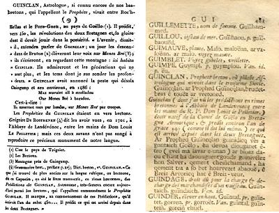
GUINCLAN dans les "Notices" de Miorcec (1818)
et dans le "Dictionnaire" du Père Grégoire (1732)
First published: Barzhaz Breizh, 1st. Edition, 1839
From the singing of
Annaïk Huon
(1763 - 1839), a beggar woman, wife of
Le Breton
from Kerigazul near Nizon (according to
table A)
"We heard [this song] in Cornouaille. However it should be known also in the Northern part of Lower Brittany, where
M. de Penguern
has collected several
fragments of poetry
ascribed to the same bard." (édit. 1839 p.19)
"[This song] was sung to me in the parish Melgven, by a beggar named
Guillou Ar Gall
" ("Argument", 1846 edition).
"Song collected at Melgven..." (1867 Edition, p.18)
Annaïk Le Breton was forgotten by Mme de La Villemarqué when she set up her first list of singers,
Table B
, the only list which her son could refer to when preparing the 1845 edition of the Barzhaz. He made up for this omission by relying on his own memory which was apparently less reliable than his mother's.
"Clémence Penquerc'h
[daughter of
Marie-Jeanne
Droal alias Mélan, wife of Penquerh, from Penanros near Nizon], remembers very well the 'Prediction of Guiclan'" (so wrote the Bard's niece,
Camille de La Villemarqué
(1855 - 1945) to her cousin Pierre, in a letter dated 21.11.1906 ). This Clémence died in 1908, but it did not occur to anybody to go and ask her questions. Camille also states in the same letter that Annaïk Le Breton's only daughter was still alive and that she would go and ask her. She must have meant her grand-daughter.
Camille se trompe lorsqu'elle écrit "J"ai bien connu la vieille Annaïk Le Breton, morte il y a une vingtaine d'années" [donc vers 1887]. Elle a dû connaître sa fille, car Annaïk est décédée en 1839 et Camille est née en 1855.
Alors que Camille "connaissait toutes les familles, parlait admirablement breton ... et resta jusqu'à la fin de sa vie [en 1945], d'une vitalité étonnante, personne... ne vint jamais la questionner", note D. Laurent (p.285 des "Sources").
Ce chant ne figure pas dans les manuscrits de Keransquer.
Il n'a été collecté que par La Villemarqué.
Selon Luzel et Joseph Loth, cités (P. 389 de son "La Villemarqué") par Francis Gourvil qui se range à leur avis, ce chant mythologique ferait partie de la catégorie des
chants inventés
.
Camille is very likely mistaken when she writes: "I did know well old Annaïk Le Breton who died a score of years ago" [i.e. around 1887]. In fact, she must have known her daughter, since Annaïk died in 1839 and Camille was born in 1855.
Concerning Camille, D. Laurent remarks on page 285 of the "Sources", "though she knew all families in the neighbourhood, spoke an excellent Breton ... and her mind remained quick and agile until the day she died, no one thought of asking her."
There is no hand-written version of this song in the Keransquer MSs.
This song is to be found only in La Villemarqué's collection.
According to Luzel and Joseph Loth, quoted by Francis Gourvil (p. 389 of his "La Villemarqué"), this mythological song was "
invented
" by its alleged collector.
On peut s'étonner de voir assimilés ci-après, les aspects les plus divers d'un personnage supposé unique: le Gwenc'hlan du Barzhaz, le Guinclan des dictionnaires, le Vieil aveugle (an Den kozh dall) de la collection De Penguern, le Gwynglaff du Chant royal, le Gwenc'hlan des Contes du soleil et de la lune d'Anatole Le Braz, le Gouinclé de Torgen-ar-Sal. Si j'avais des scrupules à faire un tel amalgame je n'en ai plus:
Le site https://to.kan.bzh qui propose une base de données relative aux chansons de tradition orale (TO) en langue bretonne consignées dans les livres, revues et manuscrits et qui utilise la classification élaborée par le fondateur et ancien président de l'association Dastum,
Patrick Malrieu
, présente sous le même n° M-00252 et le même titre critique "Diougan Gwenc'hlan" 4 séries de pièces:
A: le chant de La Villemarqué;
B: le
Vieil aveugle
de Penguern;
C: des
prophéties
collectées par
Hippolyte Raison du Cleuziou
(1819-1896), archiviste de la Société archéologique des Côtes-du-Nord. Elles ont été communiquées par son petit-fils à l'érudit celtisant
Gwennolé Le Menn
qui les a rapprochées du
Chant Royal
et d'autres sources, dont les propos de l’octogénaire, Mme Le Corre rapportés dans un ouvrage du régionaliste
Ernest Le Barzic
intitulé "Merveille de la côte de Granit Rose. L’Île-Grande Enez-Veur et ses environs" (Rennes, 1970).
D: des
formules proverbiales
(Lavaroù kozh) extraites des archives dudit Du Cleuziou;
au total, 8 versions et 19 occurrences.
Ces rapprochements mettent en évidence dans toutes ces sources un corpus commun de "formules prophétiques" ayant trait à des sujets précis. Un "livre de Guinclan" est évoqué par plusieurs d'entre elles.
Voir aussi
Dialog de Guynglaff
et
Er roe Stevan
Voici la prophétie suivie de quelques proverbes tirés des manuscrits Du Cleuziou:
Prophétie
Vers prophétiques de Guiclan que lisait dans son moulin
le meunier de Milin-Lann en Trebeurden
. Il avait le livre tout entier.
We may wonder if merging together the most diverse aspects of a supposedly unique character makes sense: the prophet Gwenc'hlan of Barzhaz, the Guinclan of the dictionaries, the Old blind man (an Den kozh dall) of the collection De Penguern , the Gwynglaff of the "Royal Song", the Gwenc'hlan of the "Tales of the Sun and Moon" by Anatole Le Braz, the Gouinclé from Torgen-ar-Sal. I found that this amalgam was already made:
The website https://to.kan.bzh offers a database of Breton oral tradition (TO) songs recorded in books, journals and manuscripts. Using the classification developed by the founder and former president of the Dastum society,
Patrick Malrieu
, it presents under the same number M-00252 and the same critical title "Diougan Gwenc'hlan" 4 series of pieces:
A: the song of La Villemarqué;
B: the
old blind man
of Penguern;
C:
prophecies
collected by
Hippolyte Raison du Cleuziou
(1819-1896), archivist of the Côtes-du-Nord Archaeological Society; They were communicated by his grandson to the Celtic scholar
Gwennolé Le Menn
who compared them with the
Royal Song
and other sources, including the words of the octogenarian, Mrs.Le Corre reported in a book by the local historian
Ernest Le Barzic
entitled "A wonder of the Red Granite Coast. the Île-Grande aka Enez-Veur" (Rennes, 1970).
D:
proverbial formulas
(Lavaroù kozh) extracted from the Du Cleuziou archives;
in total, 8 versions and 19 occurrences.
These comparisons highlight in all these sources a common corpus of "prophetic formulas" relating to specific subjects. A "Guinclan book" is mentioned by several of them.
See also
Dialog of Guynglaff
and
Er roe Stevan
Here is the prophecy followed by a few sayings taken from the Du Cleuziou ms collection:
Prophecy
Prophetic verses of Guiclan that
the miller of Milin-Lann near Trebeurden
read in his mill. He had the whole book.
1 Eürus, eürus vo ar bed
Pa zigouezo Loeiz C’hwezek.
E buhez avat na bado ket.
Un amzer a vo gwelet
5 E vo an dud ken disgizet
Ha na vo ket anavezet
Dilhad ar peizantezed
Dimeus ar re dimezelled.
Erruout a rayo ar giz
10 Ma vezo an dud gwisket en brizh:
Ar kapichonoù a vo lakaet
Ar pantalonoù a vo gwisket
Maleürus a vezo ar bed
Pa vo an dud gwisket evel naered. (1)
15 Amzer a vo e vo gwelet
An hañv, ar goañv kemmesket
Ken ne vont ket anavezet
Nemed d'eus ar gwez deliaouek
Hag ar gouelioù instituet.
20 Amzer a vo a vesterdien a gonduo ar bed,
Ar fallañ dud gwellañ dimezet.
Ar fallañ dud gwellañ estimet.
An togoù kolet a vo lakaet.
Ar mibien a essañs mat a yelo da c'hlask o boued.
25 Amzer a vo e vo gwelet
Brezel en Frañs hag a vo kalet,
Brezel sivil ha brezel all
Lec'h ma vo chefoù priñsipal.
Hag en amzer-se en-em daolo an dud fall war ar Roue hag en-devo kalz a boan en-em tenn, mar ra.
Henchoù a vo graet a-dreuz ar parrezioù da gonduiñ d’an aod. Er komañsament evo mestroù pere n'eo ket fall outo e ve labouret warne. Mes goude e vo chañjet: ar mestroù a ray o anvañs mat. Ha ne vint ket peurechuët Ma vo fin d'ar boulversamañt.
Eüruz a vo an hini
Pehini en-devo e ti
30 Etre Vilemoan ha Gindi (1)
Ma hell diwall eus ar bleizi
Ha dimeus an degouidi.
A la fin pa vo bet brezeloù en pep fason e vo lavaret: peoc'h vo bremañ. Mes allas! Souden goude e truyo seizh rouantelezh war ar Frañs hag a formo un arme a tri-ugent lev a-hed hag a daou-ugent lev a lec'hed. Hag a dalc'ho da avañs ken a vint rentet en Menez-Bre. Eno e aretint hag a bep kostez a erruo ar maerioù gant o farosioù, gwazed ha merc'hed a redont hep goût petra a reont da redek. Ha pa vint erru eno, e vo savet daou enseign: unan fall hag unan vat. Ar Roue komañs ar kombat pehini a yelo er kostez ma garo. Neuze e vo ur kombat ken sanglant ma hellfe div vilin o valañ gant ar gwad epad daou devezh. Ma gounid an hini vat e vo friket ar c'hostez fall Ne chomje hini anezhe. Mar gounid an hini fall e vo lezenn fin ar bed, hep esperañs ebet Mar gounit an hini mat, e teuio ar peoc'h Hag ar tranquillité da ren er bed;
Da vihannañ ur pennad.
(1) Velimoan est une petite île ou rocher sur cette côte-ci.
1 Heureux sera le monde
Jusqu'à ce qu'arrive Louis XVI.
Sa vie longtemps ne durera pas.
Un temps viendra où l'on verra
5 Que les gens seront si déguisés
Qu'on ne distinguera plus
Les vêtements des paysannes
De ceux des demoiselles.
Il arrivera la mode
10 Des gens vêtus en bariolé.
On portera des capuchons
Ainsi que des pantalons.
Malheureux sera le monde
Quand les gens seront vêtus comme des serpents.
15 Un temps viendra où l'on verra
L'été et l'hiver confondus,
Au point qu'on ne les distinguera
Que par les arbres porteurs de feuilles
Et par les fêtes instituées.
20 Un temps où des bâtards mèneront le monde,
Où les pires gens seront les mieux mariées
Les pires gens les mieux estimées.
On portera des chapeaux collés
Les fils des meilleures familles iront mendier.
25. Un temps viendra où l'on verra
L'âpre guerre faire rage en France.
Guerre civile et autre guerre
Opposant les principaux chefs.
En ce temps-là les gens méchants se jetteront sur le roi qui aura beaucoup de mal à s'en tirer, s'il y arrive.
Des chemins seront faits à travers les paroisses, conduisant au rivage. Au commencement il y aura des maîtres lesquels ne voudront pas qu'on y travaille. Puis tout changera; Leurs chantiers iront bon train . A peine seront-ils achevés que ce sera la fin du bouleversement.
Heureux celui
Qui habitera
30 Entre La Méloine (1) et Le Guindy,
S’il peut se défendre des loups
et des nouveaux arrivants.
A la fin, quand il y aura eu des guerres de toutes sortes, on dira: il nous faut la paix désormais.Hélas, aussitôt après, sept royaumes se rueront sur la France: une armée de 60 lieues de long et 40 de large qui avancera sans s'interrompre jusqu'au Ménez-Bre. Là elle s'arrêtera et de tous côtés afflueront les maires et leurs communes, hommes et femmes accourant sans en savoir la raison. Et quand ils seront arrivés là , on dressera deux enseignes, celle du mal et celle du bien. Alors eclatera un combat où chacun choisira son camp. Et il sera si sanglant que le sang versé pourrait alimenter deux moulins pendant deux jours. Si le camp du bien l'emporte, celui du mal sera anéanti et il n'en restera plus rien. Si c'est le mal qui l'emporte, s'imposera la loi de la fin du monde sans espérance aucune. Si c'est le bien, la paix et la tranquilité règneront sur terre, du moins pendant un moment.
(1) Velimoan est une petite île ou rocher sur cette côte-ci.
1 Happy will be the world
when Louis XVI comes,
his life will not last.
A time will come when we see
5 People so disguised
That you no longer an tell the clothes
Of peasant women
From those of young ladies.
Fashion will come of
10 People dressed in colorful clothes:
They will wear hoods
As well as trousers.
Unhappy people that will
Be dressed in snake hides.
15 A time will come when we see
Summer and winter merge together
So that you won't tell one from the other,
But for the leaf-bearing trees
And the feasts and holidays.
20 A time when bastards will lead the world,
Where the worst people will be best married
And best considered.
They will wear "glued" hats
The sons of the best families will go beg.
25. A time will come when we see
The bitter war raging in France.
Civil war and other war
Opposing the main leaders.
In those times wicked people will assault the king who will have much trouble getting away, if ever he can escape.
Paths will cut through the parishes, leading to the shore. At first rulers will be reluctant to work on them. But at a later stage ther will be a dramatic change. These projects will thrive. No sooner will they be completed than the upheaval will come to an end.
Happy whoever
Will live
30 Between La Méloine (1) and the Guindy river
If he can defend himself from wolves
and new comers.
Eventually, after all sorts of wars, we will say: we need peace from now on. Alas, immediately afterwards, seven kingdoms will rush onto France: an 60 leagues long and 40 leagues wide army will move on inexorably as far as Ménez-Bre. There they will stop and from all sides will flock the mayors and their communes, men and women running driven wilde. And there, two standards will be erected, that of evil and that of good. There will be a fight and evryone will have to choose their side. And it will be so bloody a fray that the blood spilled could drive two mills for two days. If the good party wins, the evil party will vanish and nothing will be left of it. If the evil party prevails, the law of Armageddon will be instored forever. If the good men carry the day, peace and tranquility will reign on earth, at least for a while.
(1) Velimoan is a small island or rock on this coast.
Un nebeud lavarennoù:
Pa vez an delioù war ar bodenn
Kement ha divskouarn ul logodenn
Tle adverenn war wenojenn
Ar ran a gan kent miz Ebrel
A zo gwelloc’h dezhañ tevel
Pa zeu ‘n avel tu Roch-al-Lazh
James buoc’h kozh d'an ebaz
‘N hini n’eus ket c’hoant kaout naon
Na chom ket re bell war e skaon.
Gwasoc’h eo un taol teod
Eget un taol kleze.
h.a.
Bevañ, mervel, zo memez tra
Digant Doue vit nep a ya.
Quelques proverbes:
Quand les feuilles du buisson
sont aussi longues que l’oreille d’une souris,
Le goûter doit se faire sur le chemin des champs.
La grenouille qui chante avant avril
ferait bien de se taire.
Quand le vent vient du côté de Roc’hellas,
jamais vieille vache ne prend ses ébats.
Qui ne veut sentir la faim,
ne doit pas rester longtemps sur son siège.
Un coup de langue fait plus de mal
qu’un coup d’épieu.
Etc….
Vivre, mourir, sont une même chose
pour celui que Dieu accompagne.
A few sayings
When the leaves of the bush
are as long as the ear of a mouse,
We must have our lunch on our way to the fields.
The frog who sings before April
would do well to shut up.
When the wind blows from the side of Roc'hellas,
No old cow should be left alone .
Who does not want to feel hungry,
Should not stay too long in his seat.
A tongue may cause a lot of pain
Much more than a shot of a spear.
Etc ....
To live, to die, are the same thing
To whom God accompanies.
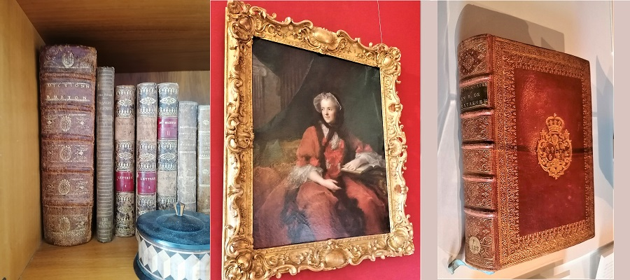
Dictionnaire de Grégoire de Rostrenen (1667-1750)
Dictionnaire français-celtique ou fançais-breton nécessaire à tous
ceux qui veulent apprendre à traduire le français en celtique
ou en langage breton, pour prêcher, catéchiser et confesser,
dans les différents dialectes de chaque diocèse...
Rennes, 1732, chez J. Vatar.
A gauche, exemplaire commun portant l'inscription:
"Ex dono Josephi
Francisci Dandigné, le 23 Germinal an 5e ou le 12 avril 1797,"
suivi des
signatures "Desnos" et "Desfosses", ainsi que d'un tampon plus récent:
"C. J. de Laroche".
A droite, exemplaire relié en maroquin rouge, dentelles, aux armes de la
reine
Marie Leszczynska
. H. 26 cm; L. 21 cm.
Versailles, Bibliothèque municipale - Rés. F132
Joseph-François Dandigné de la Chasse
, né à Rennes le 29 janvier 1724, fut sacré évêque de Léon le 11 août 1763, nommé à l'évêché de Chalon en 1772, il donna sa démission en 1781.Il fut également comte de Chalon-sur-Saône et Conseiller du roi en tous ses conseils.
Il mourut en 1807.
Dictionary of Grégoire de Rostrenen (1667-1750)
French-Celtic or French-Breton dictionary necessary for all
those who want to learn to translate French into Celtic
or into Breton language, to preach, catechize and confess,
in the different dialects of each diocese ...
Rennes, 1732, at J. Vatar's.
On the left, a common copy bearing the inscription:
"Ex dono Josephi
Francisci Dandigné, 23 Germinal year 5 or 12 April 1797, "
followed by
signatures "Desnos" and "Desfosses", as well as a more recent stamp:
"C. J. de Laroche".
On the right, a copy bound in red morocco, lace, with the arms of
Queen
Marie Leszczynska
. H. 26 cm; L. 21 cm.
Versailles, Municipal Library - Res. F132
Joseph-François Dandigné de la Chasse
, born in Rennes on January 29, 1724, was consecrated bishop of Léon on August 11, 1763, appointed to the bishopric of Chalon in 1772,.He resigned in 1781. He was also count of Chalon- sur-Saône and the King's Counselor in all His councils. He died in 1807.
NOTE:
Italiques
: Passages inspirés de la littérature galloise (Aneurin "Y Goddodin": str. 1, 20; Llyvarch Hen "Canu Heledd, Ystafell Cynddylan": str. 2, 23 à 26; Taliesin "Tri chylch hanfod..." : str. 9, 13) ou de références bretonnes (str.26 et 36) -
Caractères gras
: Mots commentés par F. Elies-Abeozen.
trad.Ch.Souchon (c) 2008
I
1. When the sun sets and the seas swell,
I sing by the house where I
dwell
.
2. Did I as a youth
sing
my fill?
No, I am old and I sing still.
3. I sing by night, I sing by day,
Though I am
distressed
and at bay.
4. I have, aye, for complaint a ground.
I bend my head and I am downed.
5. Not nearing death gives me a scare.
They may kill me: I do not care.
6. I feel neither terror nor fright;
I have lived as long as I might.
7. They may try to find me: they
won't
;
But they will find me if they don't.
8.
I don't care
about time to come:
When time is ripe I shall succumb.
9.
Three times
have gone through death all those
Who enjoy eternal repose.
II
10. I see a boar, out of the wood
Limping his way, with injured foot,
11. With open, bleeding mouth, at bay.
With his hair by old age turned grey,
12. And his
young wild boars
walk in front.
They are hungry, they
snort
and grunt.
13. Now,
a seahorse
is drawing near:
The whole shore quivers out of fear.
14. His
white
coat dazzling all over,
On his head two
horns
of silver.
15. The waters boil below
him
from
His nose's
thundering
blaze and scum.
16. Other seahorses are around,
Like reeds on a pond they abound.
17. - Stand fast! Stand fast! Stand fast, sea horse!
Hit him on the head with high force!
18. Naked feet slip on blood you spill.
Harder your blows! Aye, harder still!
19. Out comes a brook of pouring blood!
Hit harder to increase the flood!
20. I see him stay in blood, knee-deep!
Let him in a
pond
of blood creep!
21. Now, hit harder! Hit and stand fast!
You may
rest
when the day is past!
22. Hit on, hit on horse of the sea
On the head! As hard as can be!
III
23. I was asleep in my cold grave:
I heard the eagle for help crave:
24. He called his eaglets from his lair,
And all
birds
and fowls of the air.
25. And in his call he kept saying
- Hasten, hasten, birds on the wing!
26. Of dog or sheep no rotten flesh
You
shall have
, but Christian's and fresh! -
27. - O Cormorant,
cormorant, say,
What is the thing with which
you
play!
28. - The
Chieftain's skull
: I am about
Both of his red eyes to gouge out;
29. Out of the sockets red blood pours:
He has done once the same with yours.
30. - Now, tell me fox with your red claws,
What is it you hold in your jaws?
31. - It is his heart that I could seize
'Cause my heart is as false as his
32 Who hatched a plot, hastened
your death
And has made you breathe your last breath.
33. - Tell me, toad, what do you wait for,
Crouching here on his mouth's shore?
34. - He is dying and I stay there
To catch his soul gasping for air.
35. It shall dwell in me, mixed with mine,
Till I die,
atone
for his crime
NOTE:
Italics
: Passages inspired by Welsh literature (Aneurin "Y Goddodin": str. 1, 20; Llyvarch Hen "Canu Heledd, Ystafell Cynddylan": str. 2, 23 à 26; Taliesin "Tri chylch hanfod..." : str. 9, 13) or by Breton tradition (str.26 et 36) -
Bold characters
: words commented by F. Elies-Abeozen.
transl.Ch.Souchon (c) 2008
Cliquer ici pour lire les textes bretons.
For Breton texts, click here.
Résumé
C'est avec ce chant que s'ouvrait la première édition du Barzhaz, celle de 1839, avant qu'il ne soit "supplanté" par les
"Séries" en 1845.
Gwenc'hlan est un barde qu'un prince chrétien retenait prisonnier après lui avoir crevé les yeux.
Ayant le don de prophétie, il prédit qu'il sera vengé par un prince païen.
C'est la vision d'un sanglier blessé (le prince chrétien), entouré de ses marcassins qu'un cheval de mer blanc aux cornes d'argent (le prince païen) vient frapper furieusement, répandant une mare de sang. Autre vision: le barde est couché dans sa tombe. Il entend l'aigle appeler ses aiglons et tous les oiseaux du ciel pour venir se repaître de chair chrétienne. Un corbeau est occupé à arracher ses deux yeux rouges de la tête du chef de guerre qui a emprisonné et fait aveugler le poète. Un renard déchire son cœur hypocrite. Quant à son âme, elle ira habiter le corps d'un crapaud.
Contrairement à la pièce précédente, ce poème n'a jamais été collecté par d'autres que La Villemarqué. La plupart des folkloristes, en particulier Francis Gourvil qui découvrit en 1924 un "Chant Royal" dont l'existence était annoncée par deux auteurs du XVIIIème siècle, considèrent le "Gwenc'hlan" du Barzhaz comme une forgerie fabriquée par le jeune chartiste à partir de réminiscences littéraires, en particulier galloises. Ces dernières deviennent pour lui une référence de prédilection après sa participation à l'"eisteddfod" de 1838 à Abergavenny.
Un examen attentif de ce "Chant Royal", du poème du Barzhaz et des commentaires qui l'accompagnent, d'une lettre de la nièce du Barde, Camille de La Villemarqué, ainsi que d'un texte d'un autre de ses détracteurs habituels, Anatole Le Braz, conduisent à réviser ce jugement péremptoire et à conclure, même s'il est absent des manuscrits de Keransquer, à l'existence possible, sinon probable d'un authentique poème populaire à l'origine de ce texte magnifique.
Le Guinclan des dictionnaires
En 1834 les érudits bretons s'intéressaient à un mystérieux manuscrit: "les
prophéties de Guinclan
" (Guiclan ou Guinclaff) considéré comme disparu, depuis la Révolution, de l'abbaye bénédictine de Landévennec où, au dire du linguiste Dom Le Pelletier et du Capucin Grégoire de Rostrenen, il était conservé autrefois. Tous deux auteurs de dictionnaires bretons, ils avaient, l'un fait des citations, l'autre mentionné l'existence de ce texte.
Dom Louis le Pelletier
(1663 - 1733) est l'auteur d'un "Dictionnaire de la Langue Bretonne" qui fut publié après sa mort, en 1752 et dans lequel il mentionne qu'il avait eu entre les mains, à l'abbaye de Landévennec, ledit manuscrit où il avait trouvé des mots pour son dictionnaire (étant né au Mans, il n'était pas bretonnant de naissance). Dom Taillandier qui rédigea la Préface de l'ouvrage posthume avait indiqué (page VIII) que
" le plus ancien [monument écrit en langue bretonne] qu'ait trouvé Dom Pelletier est un
manuscrit de l'année 1450
, qui est un recueil de prédictions d'un prétendu prophète nommé Gwinglaff. Il a tiré quelques secours de la vie de Saint Guénolé, premier abbé de Landévennec..."
Gwinglaff est effectivement cité à trois reprises dans ce dictionnaire:
- aux mots "bagad" ("troupe")
Le pluriel est 'bagadou' qui se trouve pour 'des troupes dans les Prophéties de Gwinglâf, qui prédit:
Ma'z marvint oll a strolladoù,
War Menez-Bré, a bagadoù.
Qu'ils mourront tous par bandes
Sur le Ménez-Bré, par troupes.
- "gnou" (notoire)
-et "orzail" , (="batterie", corruption, dit Le Pelletier du français "assaillir")
Avant que l'ouvrage ne soit publié, un autre religieux, le capucin
Grégoire de Rostrenen
(1667 -1750) avait fait paraître son "Dictionnaire Celto-Breton" en 1732 où il citait ce même Guinclan:
1° Dans l'introduction: Liste des...auteurs dont je me suis servi pour composer ce dictionnaire:
"Ce que j'ai trouvé de plus ancien sur la langue... bretonne a été le livre manuscrit en langue bretonne des Prédictions de Guinclan, astronome breton très fameux encore aujourd'hui parmi les Bretons qui l'appellent communément "le Prophète Guinclan". Il marque au commencement de ses prédictions, qu'il écrivait l'an de salut deux cent quarante (240), demeurant entre Roc'h-Hellas et le Porz-Gwenn: c'est au diocèse de Tréguier, entre Morlaix et la ville de Tréguier"
2° A l'article "Guinclan", page 480 du dictionnaire qui comporte plusieurs noms propres:
"Guinclan, prophète breton, ou plutôt astrologue qui vivait dans le 3ème siècle, [et] dont j'ai vu les prédictions en rimes bretonnes à l'abbaye de Landévennec entre les mains du R.P. Dom Louis Le Pelletier."
.
Sa lecture ne dut pas être très attentive, car il ajoute:
"[Il] était natif de la comté de Goélo en Bretagne armorique
[la région qui s'étend de Paimpol à Saint-Brieuc]
et prédit aux environs de l'an de grâce 240, (comme il le dit lui-même), ce qui est arrivé depuis dans les deux Bretagnes [dans la traduction bretonne de l'article: 'en Armorique et en Grande Bretagne']."
La contradiction avec le futur dictionnaire de Dom Le Pelletier dut lui être signalée, peut-être par ce dernier, car 6 ans plus tard, dans sa
"Grammaire Celto-Bretonne"
(1738), il la corrige
partiellement
:
"Il s'est glissé...dans mon Dictionnaire...une très grosse [erreur]: C'est au mot Guinclan dont j'ai marqué les prédictions à l'an 240 au lieu qu'
il faut mettre 450
."
3° Notons, pour être complet que le mot "prédiction", page 749, contient le renvoi
(Voyez Güinclan)
, article qui contient effectivement la traduction proposée ici "diougan".
L'erreur n'était plus que de 1000 ans! Les commentateurs qui s'intéresseront à Guinclan par la suite retiendront cette date: "l'an 450". C'est le cas de
Cambry
dans son "Voyage dans le Finistère" (1797) et de
l'Abbé de la Rue
dans ses "Recherches sur les Bardes" (1815).
Le Guinclan de Miorcec de Kerdanet
C'est surtout le cas de
Daniel-Louis Miorcec de Kerdanet
dans ses
"Notices Chronologiques..."
(1818) où l'on peut lire (pp. 8-9):
[Guinclan] prédit
vers l'an 450
, les révolutions des deux Bretagne et
la gloire dont il devait jouir dans la postérité
;
"L'avenir... entendra parler de Guinclan. Un jour les descendants de Brutus [= les Bretons] élèveront leurs voix sur le Ménez-Bré. Ils s'écriront en regardant cette montagne: 'Ici habita Guinclan'. Ils admireront les générations qui ne sont plus, et les temps dont je sus sonder la profondeur."
La Villemarqué a repris cette phrase de confiance dans la "Bibliographie bretonne" de Levot (1852). Il est aisé de démontrer qu'il s'agit -là d'une
paraphrase de la "Guerre de Carros"
, tirée de la traduction par Le Tourneur d'
"Ossian, fils de Fingal" de McPherson
:
"L'avenir entendra parler d'Ossian. Un jour les descendants du lâche élèveront leurs voix sur Cona. Ils s'écrieront en regardant ce rocher: 'Ici habita jadis Ossian'; ils admireront et les générations qui ne sont plus et les héros que j'ai chantés."
Miorcec ajoute:
"Guinclan avait
annoncé la peste qui désola Guingamp et ses environs en 1486
:
"Ma'z marvint holl a strolladoù
War Menez Bré, a bagadoù."
C'est-à-dire:
"Qu'ils mourront tous par bandes
Sur Ménez-Bré, par troupes."
Cette citation est tirée du mot "Bagad" du Dictionnaire de Le Pelletier, p.33, où il est seulement dit que le pluriel "bagadoù" pour "des troupes" se trouve dans les Prophéties de Gwinglâf".
Lesdites "Prophéties", redécouvertes en 1924, s'intéressent effectivement avant tout au sort de Guingamp entre 1570 et 1588. Mais dans ce document, les troupeaux humains qui périssent sur le Ménez-Bré (à 20 km de Guingamp) sont les Bretons enrôlés de force par les Anglais. La Villemarqué, quant à lui, citera la même phrase en l'appliquant aux prêtres catholiques.
Guinclan est encore mis à contribution par Miorcec dans son
"Histoire de la Langue des Gaulois"
en 1821 (pp.33-34):
"En 450 parurent les "Prophéties" bretonnes de Guinclan, barde et devin du pays de Tréguier. Son
animosité contre les prètres
lui valut le surnom de "Guinclanff" ou "Quinclanff" qui veut dire chien enragé. On assure qu'il viendrait un temps où les ministres de notre sainte religion seraient poursuivis comme les bêtes fauves. C'était presque l'annonce des malheurs de la Révolution."
Kerdanet reprend ces éléments dans son édition des
"Vies des Saints de Bretagne", d'Albert Le Grand,
qui paraît à Brest en 1837. Il "traduit" en Breton la fameuse phrase à propos
des générations qui ne sont plus
et les temps que je sus sonder":
"An amzerioù tremenet
Hag an dud diskilhet..."
Il ajoute que son héros se fit
enterrer sous le Ménez-Bré
et défendit, comme jadis Nostradamus, qu'on ouvre jamais sa tombe, car si l'on troublait son repos, il bouleverserait l'univers.
Il lui prête aussi une prédiction promettant aux
défricheurs des pires terres
qu'avant la fin du monde, elles produiraient le meilleur blé. Comme on le verra plus loin, elle figurera, elle aussi, en bonne place dans le Barzhaz. Et, chose bien plus étonnante, dans le "Dialogue" découvert en 1924.
Abarzh ma vezo fin ar bed;
Fallañ douar ar gwellañ ed.
Que sorte avant la fin du monde
Le meilleur blé d'un sol immonde.
.
C'est donc, plus que le père Grégoire et son erreur de date,
Miorcec de Kerdanet
qui est le grand responsable de toute la fantasmagorie autour du fameux
prophète du Vème siècle
qui enflamma tant d'imaginations et en particulier celle du jeune La Villemarqué.
La soi-disant découverte de La Villemarqué
Comme on le verra à propos du premier chant qu'il publia,
"la Peste d'Elliant"
, le jeune chartiste avait eu en 1835 un entretien avec Miorcec à sa résidence de Lesneven. Il fut certainement question dans leur conversation du mystérieux prophète, car, dans le post-scriptum de la lettre qu'il lui envoya le 20 septembre, il lui demandait:
"Possédez-vous maintenant Gwinclan? Quel est l'âge de ce monument si curieux?"
Or, à la même époque l'Inspecteur général dans l'administration des Beaux-arts,
Prosper Mérimée
avait été chargé par le Ministre de l'Instruction publique de s'informer de l'existence du fameux manuscrit auprès des bibliothécaires de Bretagne et d'en négocier l'acquisition. Il fut informé le 15 ou le 16 septembre par un de ses amis, le comte de Carné, en arrivant à Quimper, que ledit manuscrit aurait été découvert, non par Miorcec, mais par La Villemarqué. L'Inspecteur se réjouit, semble-t-il de l'événement annoncé et avait poursuivi sa route vers le sud-est, dès le 18 septembre.
Malheureusement, un mois plus tard, un journal légitimiste de Nantes, l'"Hermine", qui avait annoncé la fausse nouvelle de la découverte le 16 octobre 1835, (imité en cela, les 28 et 29 octobre, par deux grands journaux parisiens, le "Courrier Français" et le "Journal des Débats", qui reprenaient les mêmes fautes d'orthographe que leur modèle: "Delaville-Marqué" et "Quin-Clan") faisait part à ses lecteurs, le 30 octobre, d'un incident: lorsque le jeune homme muni d'une autorisation de l'évêque de Quimper vint prendre copie du document exhumé dans une église des Montagnes Noires, ce fut pour apprendre que ce précieux papier avait été enlevé par M. Mérimée. Les adversaires du gouvernement d'alors, en particulier la revue "La Mode" s'emparèrent de l'information pour vilipender le ministère Guizot.
Francis Gourvil, l'auteur d'une volumineuse étude publiée en 1960 sur "La Villemarqué et le Barzaz-Breiz", voit dans le silence du jeune La Villemarqué la preuve d'une duplicité précoce...
Il semble que ces fausses nouvelles aient reposé sur une confusion:
Dans une lettre, sans doute du premier semestre de 1835,
Mme de La Villemarqué
écrit à son fils:
"J'ai parlé au vicaire de Dirinon. Plusieurs personnes ont donné de l'argent pour retrouver Guinclan".
Réponse du recteur en janvier 1836:
"...Jamais notre fabrique n'a possédé ce fameux manuscrit et tout ce que les journaux ont débité à ce sujet n'est qu'un tissu d'erreurs...On a confondu
la vie de Sainte Nonne
, patronne de la paroisse avec les œuvres de votre compatriote..."
(La vie de Sainte Nonne, "Buhez Santez Nonn" fut publiée en 1837 par l'Abbé Sionnet avec une traduction du grammairien
Le Gonidec
. Ces lettres sont citées par F. Gourvil dans la "Nouvelle Revue de Bretagne", numéros de mai et juillet 1949)
La polémique avec Mérimée
Une entrevue eut lieu entre les deux hommes en janvier 1836 qui mit fin en apparence à l'incident. Mais on peut supposer que le franc-parler de Mérimée ne manqua pas de blesser profondément l'amour propre et la fierté du jeune Breton. Mérimée se vengea en publiant un rapport,"Notes d'un voyage dans l'ouest de la France", où il reproche aux Bretons, en dépit de leur patriotisme provincial, de n'être pas préoccupés par la sauvegarde de leurs monuments et expose qu'il appartient au gouvernement de prêcher l'exemple.
Cette polémique où s'exacerba le nationalisme local du jeune homme, a nuit à sa carrière débutante, en prévenant contre lui des écrivains de renom: Sainte-Beuve qui le premier met en doute "l'exactitude...de ses recherches...et l'esprit critique qui y aurait présidé", et Lamartine dont il ne reçut jamais que de vagues encouragements.
Ayant essuyé un refus de la part de la "Revue des Deux- Mondes", créée en 1830, il fait paraître dans l'"Echo de la Jeune -France", le 15 mars 1836, un article intitulé
Un débris du bardisme
accompagné du chant
La Peste d'Elliant
qu'il datait du 6ème siècle.
Cet article répond aux agressions verbales de Mérimée et contient "tout le Barzaz Breiz en puissance", comme l'a écrit le linguiste F. Gourvil.
On y trouve en effet des envolées lyriques telles que:
"Aujourd'hui qu'asservis à la France et privés de notre liberté, nous avons cessé de former une nation à part..." ou "La France, cette étrangère qui est venue s'offrir à nos pères un poignard à la main, et qui nous oppresse et nous tue! Non, non, ô ma Bretagne...nous n'aurons de mère que toi, nous voulons mourir sur ton sein!"
Ces déconvenues se poursuivirent jusqu'à ce que La Villemarqué trouve dans l'historien
Augustin Thierry
et son ami,
Claude Fauriel
de l'Institut, des partisans enthousiastes de ses travaux.
Thierry insère en effet, en 1838, dans la 5ème édition de son "Histoire de la conquête de l'Angleterre", le chant
Retour d'Angleterre
, en ajoutant que ce "curieux morceau de poésie... est destiné à faire partie d'un recueil intitulé "Barzaz Breiz" dont la publication aura lieu prochainement."
Cependant, l'organisme public sollicité, le "Comité historique de la langue et de la littérature françaises", refusa de cautionner la publication du "Barzhaz" objectant
"l'impossibilité...d'en constater la date, l'origine...et combien il serait fâcheux pour le Comité de couvrir de son crédit la fraude de quelque McPherson inconnu."
(L'auteur des poèmes d'Ossian qui avait perdu toute crédibilité depuis longtemps).
Le Gwenc'hlan gallois de La Villemarqué
Le 30 avril 1838 La Villemarqué était missionné par le Ministère de l'Instruction publique pour participer en octobre au congrès celtique dit
"Eisteddfod" d'Abergavenny
au Pays de Galles. La perception qu'il eut désormais du mystérieux prophète se ressentit, tout comme l'ensemble de son œuvre, de ce contact prolongé avec la culture cambrienne (cf. encart ci-après).
Dans l'introduction au Barzhaz de 1839, il expose ce qui suit (pp. xi-xv):
"De même que les habitants du pays de Galles avaient recueilli les œuvres de leurs poètes les plus célèbres, les Bretons d'Armorique ont possédé jusqu'à la fin du dernier siècle un
recueil des chants d'un de leurs bardes
...[Il] se nommait Gwenc'hlan et ses poésies [ont été] confondues, mal à propos, avec le manuscrit breton de Sainte-Nonn...
Suivent les élucubrations de Miorcec sur la renommée future que le prophète se prédit et sur la vindicte dont il accable les prêtres chrétiens.
Mais, fait nouveau, il affirme qu'il faut voir dans le nom de Gwenc'hlan ('race pure' et non 'chien malade') le surnom d'un certain
"Kian qu'on appelle Gueinchguant"
(Cian qui vocatur Gueinchguant), cité par
Nennius
, historien britannique du 9ème siècle écrivant en latin. S'il s'agit vraiment de lui, l'étymologie de Miorcec est moins fausse que celle de la Villemarqué: Ce même Kian est évoqué dans le poème "Y Gododdin", tiré du "Livre d'Aneurin" datant de la fin du 13ème siècle et racontant une bataille qui eut lieu au 6ème siècle. Il y est question de "Cian o vaen Gwyngwn" que l'on traduit par "Kian de la Roche aux Chiens Blancs", où Cian signifie "Petit chien" et ses fils sont nommés "aer gwn" -chiens de guerre et non "blanc sommet", comme l'affirme La Villemarqué!
A titre de justification, il indique que des écrivains anglais modernes, l'historien Sharon Turner et Evan Evans, le traducteur de "Y Gododdin" admettent de telles approximations pour les poètes gallois Aneurin et Llyfarc'h Hen!
Signalons que dans un article publié dans les "Annales de Bretagne", 1930, vol. 39-1, page 30, Emile Ernault rapproche ce nom de "Gwengolo" (Paille Blanche) qui désigne le mois de Septembre.
La plus récente remarque que j'aie trouvée à ce sujet explique "Gueinth Guant" par "Gwenith Gwawd" qui signifierait "Froment (breton "gwinizh") de Louange".
Si le jeune homme s'est effectivement référé à des chants entendus à Nizon, on peut penser qu'il s'est inspiré pour les "mettre au point" des
modèles gallois
qu'il signale lui-même dès l'édition de 1839 avec une franchise désarmante et qui sont presque tous tirés de l'incontournable collection de Myvyr. Certaines de ces références sont appuyées de citations dans un gallois (?) qui ressemble au breton dans l'orthographe de
Le Gonidec
. Ces curieuses traductions disparaîtront de l'édition 1867:
Taliésin qui croit à la métempsychose:
"Je suis né deux fois...j'ai été mort, j'ai été vivant; je suis tel que j'étais... J''ai été biche sur la montagne... J'ai été un coq tacheté...J'ai été daim de couleur fauve; maintenant je suis Taliésin" (cf. strophe 9).
Le même Taliésin, en parlant d'un chef gallois, l'appelle le "cheval de guerre" (str. 13).
Llyfarc'h Hen le fataliste:
«Si ma destinée avait été d’être heureux, [toi mon fils] tu aurais échappé à la mort... Avant que je marchasse à l’aide de béquilles, j’étais beau... je suis vieux, je suis seul, je suis décrépit... Malheureuse destinée qui a été infligée à Llyfarc’h, la nuit de sa naissance : de longues peines sans fin" (str. 2).
Aneurin, auteur du poème "Y Gododdin", qui fut fait prisonnier à la bataille de Catraeth:
« Dans ma maison de terre, malgré la chaîne de fer qui lie mes deux genoux, moi, Aneurin, je chanterai, dit-il, le chant des "Gododdin" avant le lever de l’aurore.» (str. 1)
et le même poème offre un vers qui se retrouve presque littéralement dans le chant armoricain :
«On voit une mare de sang monter jusqu’au genou." (str.20)
Llyfarc'h Hen encore "quand il décrit les suites d'un combat":
« J’entends cette nuit les aigles d’Eli... Ils sont ensanglantés ; ils sont dans le bois... Les aigles de Pengwern appellent au loin cette nuit on les voit dans le sang humain.» (str. 23 à 25)
Une tradition apocryphe?
Il est peu probable que le jeune La Villemarqué ait créé ex nihilo un texte d'une telle puissance évocatrice.
On apprend dans l'introduction au Barzhaz de 1839, que
J.M. de Penguern
a également fait des recherches sur Guinclan et qu'elles ont été couronnées de succès. Le chant découvert par de Penguern ne peut être que
"An den kozh dall"
(Le vieillard aveugle). La citation qu'il en fait dans les éditions ultérieures:
"Mon fils vois-tu verdir le trèfle? -Je ne vois que la digitale fleurir, répond l'enfant. -Alors, allons plus loin,"
permet à Villemarqué de présenter son héros comme ayant un double aspect: barde guerrier et agriculteur.
Cette assimilation lui a sans doute été inspirée par ce qu'il affirme, à tort, être une autre citation de Dom Le Pelletier (mais qu'il a trouvée chez Kerdanet):
Abarzh ma vezo fin ar bed;
Fallañ douar ar gwellañ ed.
Que sorte avant la fin du monde
Le meilleur blé d'un sol immonde
.
Quant aux propres recherches de La Villemarqué, elles ont abouti à la découverte du texte ci-dessus issu de la "tradition actuelle", que
les paysans intitulent "Prédiction de Gwenc'hlan"
et qui offre
"tous les caractères de la poésie des bardes gallois des 5 et 6ème siècles avec ... plus ... de paganisme et une haine prononcée contre l'Eglise chrétienne tout entière".
Pierre de La Villemarqué, le fils du Barde, publia en 1908 une lettre que lui avait envoyée sa cousine Camille où il est question de
Marie-Jeanne Penquerh, née Droal
de Penanros en Nizon (1806 - 1892), citée sur
les listes de chanteurs
dressées par la dame de Nizon. Alors que cette dernière attribue ce chant à Annaïk Huon, épouse Le Breton, de Kerazul en Nizon, Camille affirme que Marie Penquerh se souvenait fort bien de quelques vieux chants rares et, parmi eux, de la "Prophétie de Gwenc'hlan". La Villemarqué, quant à lui, indique dans l'"argument" du chant de 1845, l'avoir recueilli "en Melgven auprès de Guillou Ar Gall".
Cette double source recoupe l'indication fournie par le Père Grégoire dans l'introduction de son Dictionnaire (Liste des auteurs dont je me suis servi pour composer ce dictionnaire):
"Guinclan...très fameux encore aujourd'hui [1732] parmi les Bretons qui l'appellent communément le Prophète Guinclan".
Par ailleurs, entre l'édition 1839 pour laquelle le jeune La Villemarqué ne disposait que de ses propres ressources linguistiques et l'édition suivante de 1845 qui a sans doute bénéficié du contrôle d'un authentique bretonnant, l'Abbé Henry, on ne note
aucun changement important
, si ce n'est le remplacement de "kurun"(tonnerre) par "taran" (tonnant), strophe 15.
Henri d'Arbois de Jubainville
, pourtant très sceptique quant à l'origine des pièces historiques du Barzhaz, traite du présent poème dans son "Etude sur la 1ère et la 6ème édition des Chants populaires de Bretagne" publiée en 1867 dans la "Bibliothèque de l'Ecole des Chartes", tome 28, p.272, dans des termes qui montrent qu'
il ne doute pas de l'authenticité du "Gwenc'hlan"
. A propos de certains changements minimes opérés par l'auteur entre les 2 éditions, il approuve le remplacement de "vorc'higo" (porcelets, strophe 12) et "kerno" (cornes, strophe 14) par "voc'higoù" et "kernioù", mais il critique, à la strophe 24, celui de "ezned" (oiseaux) par le moderne "evned" et, à la strophe 8, celui de "Deuz forz petra a c'hoarvezo" (il vient forcément ce qui arrivera), par "Na vern petra a c'hoarvezo" pour justifier la traduction fautive de 1839: "Peu importe ce qui arrivera".
Il n'est pas plus indulgent pour des modifications de détail introduites, tantôt pour se conformer aux règles de
Le Gonidec
: la disparition du double archaïsme "and erc'h gann" (la neige blanche, mot féminin, strophe 14), remplacé par "an erc'h kann" (forme moderne masculine précédée de l'article usuel); l'imparfait "me a gane" au lieu du conditionnel "me ganefe"; avec un "e" intercalaire, tantôt pour créer de nouvelles allitérations: "Pa" (quand), répété 4 fois dans les stophes 1 et 2, au lieu de "Ma" (si). C'est le même souci de l'allitération qui le conduit à transformer la strophe 15:
An dour dindan hen o firvi
Gant an tan gurun euz he fri.
qui devient:
An dour dindanañ o virviñ
Gant an tan daran eus e fri.
ainsi que la strophe 14:
En ken gwenn ewid an erc'h gann.
qui devient:
Eñ ken gwenn evel an erc'h kann,
alors que, s'il s'en était tenu aux règles édictées par
Le Gonidec
, il aurait écrit:
Eñ ker gwenn evit an erc'h kann,
dont toute allitération aurait disparu.
Jubainville n'aurait certainement pas consacré plus de la moitié (près de 8 pages) de son étude à un texte qu'il aurait considéré comme une simple forgerie à laquelle on pouvait toucher sans inconvénient. C'est pourquoi, on ne saurait considérer à coup sûr ce chant comme apocryphe, même si, à n'en pas douter, il a été sérieusement "retravaillé" par le collecteur, selon son habitude.
Le Gwenc'hlan des Romantiques
Les "notes et éclaircissements" de l'édition de 1839 du Barzhaz portent l'indication que l'attribution (dans l'argument) à Gwenc'hlan de cette pièce qui ne cite nulle-part son nom se justifie par la strophe 23, car le prophète
"marque au commencement de ses prédictions, dit le Père Grégoire de Rostrenen, qu'il [écrivait l'an de salut 240], demeurant entre
Roc'h-Hellas
et le Porz-Gwenn au diocèse de Tréguier, entre Morlaix et la ville de Tréguier"
(Introduction: liste des auteurs utilisés par le Père Grégoire pour son dictionnaire).
En 1852 l'
Abbé Daniel
plaçait Guinclan sur le rocher
"où le barde Gwenc'hlan maudit tant de fois le christianisme naissant dans nos contrées... [On] a fait dernièrement ériger une croix sur la pointe de Roc'h Allaz: c'est encore un démenti de plus donné aux prédictions de Gwenc'hlan
" (Bibliothèque bretonne, Saint-Brieuc II, p.761). La même conception se retrouve sous la plume d'
Anatole de Barthélémy
dans ses "Mélanges historiques sur la Bretagne", I, 1853, p.58 et
Benjamin Jollivet dans sa "Géographie des Côtes-du-Nord", IV, 1859, p.123
Cette "tradition" en contredisait une autre, comme l'affirme R. Largillière dans les "Annales de Bretagne", tome 37, N°3-4, p.300, qui plaçait à
Bégard
le lieu de résidence du prophète et son tombeau dans l'abbaye de cette paroisse située à 6 km au nord-est du Ménez-Bré. En réalité, cette fiction avait été créée par un auteur obscur,
Poignand
, dans un ouvrage intitulé "Antiquités historiques et monumentales de Montfort à Corseul" publié à Rennes en 1820, au motif que Bégard et Guinclan signifieraient tous deux "bouche excellente". Ces élucubrations ont de l'importance dans la mesure où elles ont été connues: elles furent reprises par un autre auteur tout aussi obscur,
Marchandy
, en 1825, dans "Tristan le Voyageur".
Quant à l'option retenue par Kerdanet qui fait du
Ménez-Bré
la retraite, puis le tombeau de Guinclan, c'est également celle de multiples auteurs:
Le Maout
("Annales Armoricaines", Saint-Brieuc, 1846, p.38), Les
continuateurs d'Ogée
, (en 1853 au mot "Pédernec"),
Pol de Courcy
("Itinéraire de Rennes à Saint-Malo", 1864, p.194),
S. Ropartz
("Histoire de Guingamp",2ème édition, I, p.15, en 1859),
Geslin de Bourgogne
et
A. de Barthélémy
("Anciens évêchés de Bretagne", III, I, p. ix, en 1864)...
Les deux dictons "barbares"
Comme on l'a dit à propos du "Gwenc'hlan gallois", La Villemarqué n'était pas en reste et citait, lui aussi, "Gwenc'hlan selon Kerdanet" dès la première édition du Barzhaz de 1839 (pp. xi, xii et 11):
"L'avenir entendra parler de Gwenc'hlan..." et "Un jour les prêtres chrétiens seront traqués comme des bêtes fauves".
Par ailleurs, La Villemarqué attribuait à "une tradition populaire"
deux dictons barbares
qui apparaissent dans l'édition de 1845 et dont il a pu s'inspirer:
"Tud Jezus-Krist a wallgasor / Evel gouezed o argador" (Les prêtres du Christ seront poursuivis/ On les huera comme des bêtes fauves).
Dans l'édition de 1839, on rappelle aux lecteurs de "L'histoire de la langue des Gaulois" qu'une tradition dans ce sens est "rapportée par M. de Kerdanet", mais cette précision ne figure plus aux éditions suivantes
et,
"Rod ar vilin a valo flour / Gand goad ar venec’h eleac’h dour." (La roue des moulins moudra menu: le sang des moines lui servira d’eau).»
On trouve un équivalent français de cette phrase dans le "Guyonvarc'h" de
Dufilhol
(Paris, 1835, pp.26, 109 et 163):
"Arrose, arrose ton moulin, il veut tourner avec du sang"
. R. Largillière considérait en 1925 qu'on avait là un centon qui existe encore dans la bouche des paysans du Bas-Tréguier.
L'authenticité de cet aphorisme semble confirmée par une communication du grammairien
François Vallée
au congrès de Moncontour de l'"Association Bretonne", en 1912, qui affirma avoir recueilli une "prophétie rimée" sur la
résurrection de Guinklan
, sur le combat terrible qui doit se livrer et sur
"le moulin de l'Île Verte qui tournera avec du sang"
.
Cette affirmation est accueillie avec le plus grand scepticisme par Francis Gourvil en 1960 dans son important ouvrage déjà cité.
Le Gwynglaff du "Dialogue avec le roi Arthur"
En 1924, ce même
Francis Gourvil
(1889 - 1984) découvrit dans le grenier du manoir de Keromnès, en Locquénolé, près de Morlaix, à l'occasion d'un partage de bibliothèque, un manuscrit contenant 247 vers intégralement
copiés par Dom Le Pelletier lui-même
constituant la fameuse prophétie, sous le titre
"Dialog etre Arzur, Roe an Bretounet ha Gwynglaff"
(
Dialogue entre Arthur, roi des Bretons et Guinclan
), suivi des mots "L'an de Notre Seigneur Mil quatre cent et cinquante".
Un copiste mal avisé avait raturé le mot "mil" (ce qui explique l'erreur du père Grégoire), mais, pour critiquer cette rature, le savant Dom Pelletier attirait l'attention sur les mots français dont ce texte est truffé, au nombre desquels on trouve "canol" pour "canons".
Le texte de ce "Dialogue" où Guiclan ne figure pas comme auteur, mais comme acteur, est structuré comme suit, selon l'analyse publiée par R. Largillière dans les "Annales de Bretagne" (tome 38, 1929):
1° Vie de Gwynglaff, être à demi sauvage, n'ayant d'autre abri que les arbres des forêts dans lesquelles il errait couvert d'une cape rousse. Il connaissait l'avenir. (c'est le thème de l'"homme sauvage" que l'on retrouve dans le chant
Merlin Barde
).
2° Un dimanche, le roi Arthur [une référence antique qui, elle aussi, excuse Grégoire de Rostrenen] se saisit de lui et lui intime l'ordre assorti de menaces de lui dire quels prodiges arriveront en Bretagne avant la fin du monde.
3°Réponse: "Tu sauras tout, excepté ta mort et la mienne" suivie de précisions difficiles à interpréter; été et hiver confondus, jeunes gens à cheveux gris,
la pire terre qui fournit le meilleur blé
[ce qui confirme l'affirmation de La Villemarqué]; hérétiques défiant la loi divine, etc.
4° Prédictions concernant les années de 1570 à 1575 et 1587 et 1588.
5° Longue réponse à une question du roi: guerres et destructions imputables aux seuls Anglais. Sous peine d'être décapités, les Bretons sans armes et les gens armés devront affronter les ennemis.
Ils mourront par bandes et par troupes sur le Ménez Bré
; devront assiéger Guingamp, rompre ses murailles et piller ses biens. On violera les filles, tuera hommes et femmes. Par punition de Dieu, les Saxons prendront possession de la Bretagne.
Les passages en caractères gras avaient été cités par divers auteurs avant la redécouverte du manuscrit. D'autres sont cités dans les deux dictionnaires qui s'en inspirent, mais sont absents du manuscrit: le mot "orzail" (Le Pelletier) et la phrase indiquant que Guinclan "demeurait entre Roc'h-Hellas et le Porz-Gwenn" (Grégoire). Sur le manuscrit, Dom Le Pelletier mentionne
2 versions des Prophéties
. Ces mots doivent figurer sur la version manquante qu'il a montrée au Père Grégoire.
Selon
J. Tourneur-Aumont
, dans les mêmes Annales, il s'agit d'un "Chant royal" composé suivant les canons en vigueur au XVème siècle pour servir les intérêts du roi de France Charles VII. L'intérêt de ce texte est philologique, non historique. F. Gourvil remarque que rien n'indique qu'il ait été la propriété de l'abbaye de Landévennec et rien n'autorise non plus à supposer qu'il ait été détruit sous la Révolution.
Dans le "Que-sais-je?" qu'il consacre en 1952 à la "Langue et littérature bretonnes", le même Francis Gourvil souligne insidieusement, que, selon lui, cette découverte "a permis de réduire à néant les prétentions de ceux qui, croyant le texte disparu à jamais, avaient inconsidérément abusé de lui." Il est clair qu'il vise spécialement le poème publié par La Villemarqué.
Il ressort, cependant, de ce qui précède, que ce dernier ne prétendait nullement avoir restitué les "prophéties" disparues, mais rendre compte d'une tradition orale.
Loin d'infirmer les affirmations du jeune Barde, cette pièce les
confirme
:
Elle reprend
deux de ses citations
: "Les pires terres..." et "Ils mourront sur le Ménez-Bré...";
(Cette seconde citation se trouve page 65 du 3ème carnet de collecte de LaVillemarqué publié en novembre 2018, suivie de la phrase 'Savan ma mouez war ar Menez-Bre"= "J'élève ma voix sur le Ménez-Bré"). Ce passage conclut une description de cette colline, de la chapelle qui la surmonte, du menhir taillé en croix, de la foire qui s'y tient le 17 juin, fête de Saint Hervé. Il est orné de dessins: la croix-menhir, une porte et des armoiries portant hermines, cloches et anneaux.
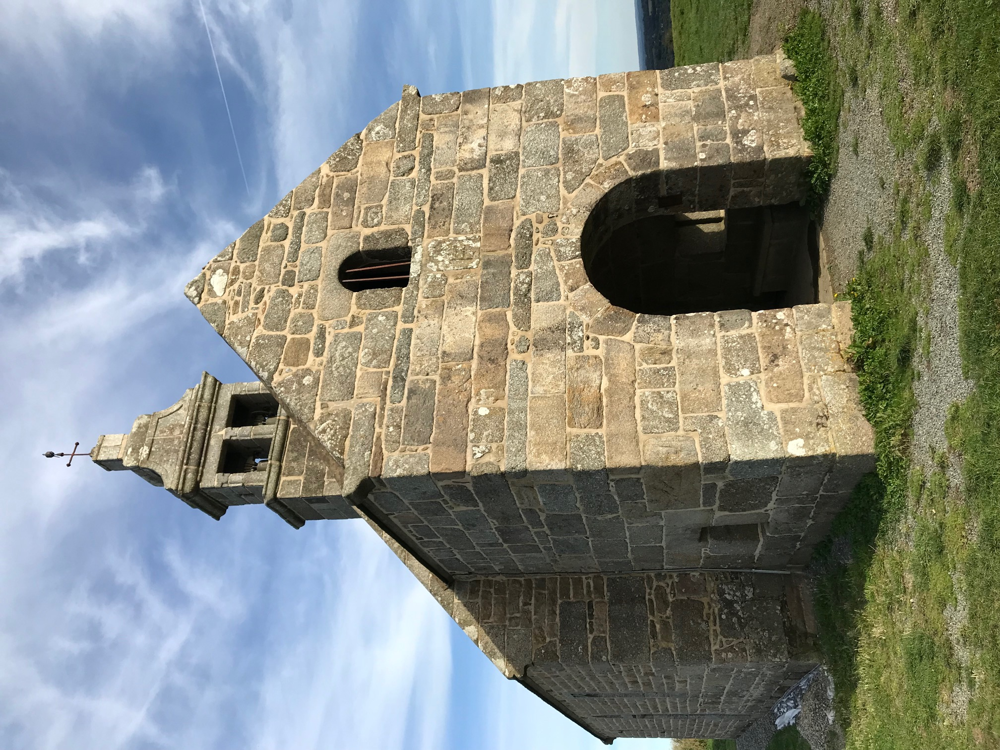
***
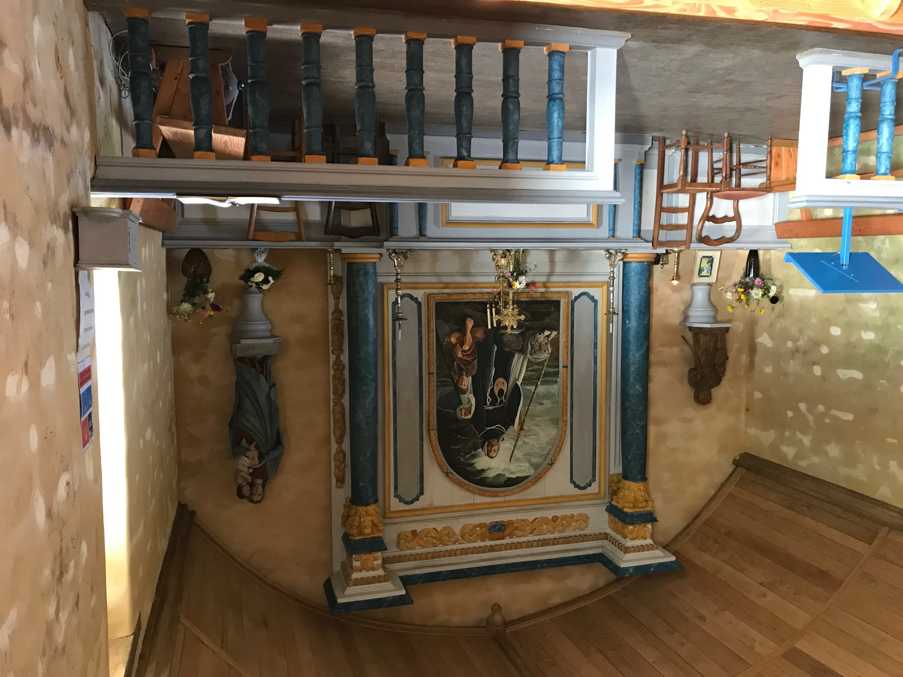
La Chapelle Saint- Hervé aujourd'hui (Photos J. Philippe-Quentin)
Elle fait de Gwynglaff un
contemporain du roi Arthur
, autre personnage légendaire dont Nennius dans son "Historia Brittonum" (ca 960) dit qu'il livra diverses batailles contre les Saxons dont celle de Mont-Badon qu'un autre document rédigé à la même époque, les "Annales Cambriae", date de 516. Si Gwenc'hlan avait vécu, ce serait donc au VIème siècle.
Le Gwenc'hlan d'Anatole Le Braz
On a vu à propos des
Séries
que La Villemarqué avait en
Anatole le Braz
un critique acerbe. Et pourtant, dans les "Contes du Soleil et de la Brume" (1905) du même Le Braz, on trouve une description très poétique du Ménez-Bré, cette "montagne" de 300 m à l'ouest de Guingamp, dont il assure que:
"Les Bretons du VIème siècle n'hésitèrent pas à lui confier l'ombre de leur fameux Gwenc'hlan dont le souvenir et les chants les avaient accompagnés dans leur exode. Barde et prophète, comme Merlin, Gwenc'hlan, dont le nom veut dire "race sainte", passait pour avoir été l'un de ses plus brillants continuateurs."
Le Braz ne rechigne pas à citer les trois premières strophes du Barzhaz, lorsqu'il évoque
"la plainte amère que lui a prêtée, dans le Barzaz-Breiz, le vicomte de La Villemarqué."
Il poursuit:
"Dans toute l'ancienne Domnonée [côte nord de la Bretagne], ses prédictions étaient célèbres. Elles furent même rédigées par écrit et l'on en conservait, paraît-il, un recueil, il y a quelque deux cents ans, chez les moines de Landévennec. Aujourd'hui, ce n'est guère que
dans la mémoire du peuple
que l'on peut trouver un écho fort affaibli de ces paroles sibyllines, de ces 'diou-ganoù'".
La source de cette tradition orale relative au prophète n'est autre que Marguerite Philippe, ou
Marc'harid Fulup
, (1837 -1909). Aussi appelée Godik ar Vognez (Margot la Manchote), c'était l'informatrice principale de
Luzel
, à Plouaret et elle lui enseigna à elle-seule 259 chants. En l'occurrence, il s'agit de contes relatifs au mystérieux personnage:
Il habitait le manoir de Run-ar-Goff à l'ouest de la montagne et pouvait tourner complètement la tête vers l'arrière à la manière des chouettes.
Il voyait les événements se mettre en marche, mais il parlait peu, préférant converser avec les corbeaux et les oiseaux migrateurs qui l'informaient des événements du monde.
Une fois il combattit toute une journée un ennemi invisible avec son épée, au sommet du Ménez-Bré. Il avait exterminé de futurs envahisseurs et les nuages étaient rougis de leur sang.
Avec la plume d'un
"aigle de mer"
il écrivit son testament: il possédait des richesses immenses qu'il garderait, avec ses livres et ses secrets, dans une sépulture inconnue. Quant aux Bretons, qu'ils gardent leur pauvreté, car elle est la source des meilleures joies. Les douze chariots chargés de son or, conduits des hommes aux yeux bandés, firent plusieurs fois le tour de la montagne avant de déverser leur contenu dans un puits sans fond. Puis on entendit un grand soupir. C'est tout ce qu'on savait de la fin de Gwenc'hlan.
"Tous les cent ans, dit-on, la nuit de la première lune, le Ménez-Bré s'ouvre...Si quelqu'un...se risquait dans la fente, une lumière magique s'élèverait devant lui pour le guider jusqu'à Gwenc'hlan... [dont] l'esprit remplit les entrailles de la montagne comme la vertu de Saint-Hervé en parfume le sommet"
(le Ménez-Bré est couronné d'une chapelle dédiée à ce saint: un thaumaturge en chasse un autre).
Une tradition similaire est évoquée par M.
Le Teurs
dans le "Bulletin de la Société Archéologique du Finistère" (1875-1876, p.179). Elle concerne la paroisse de Saint-Urbain dans le Finistère, où un tertre nommé
"Torgen ar Sal"
est réputé être la sépulture de "Gouinclé". Il y repose avec ses trésors.
L'interprète habituel de Marguerite Philippe,
François-Marie Luzel
n'a jamais entendu parler de Gwenc'hlan, si ce n'est, dit-il, qu':
"A Louargat, au pied du Ménez-Bré, une vieille femme que j'interrogeais m'a dit un jour qu'il y avait autrefois
ur Warc'hlan
sur le sommet de la montagne. Serait-ce une altération de Gwinglaff? Elle ne savait du reste si c'était un homme ou un animal".
La conclusion que tire R. Largillière de ce qui précède dans son étude sur Gwenc'hlan, c'est que
"
les créations littéraires des écrivains du XIXème siècle ont pénétré dans le peuple"
et que, loin de rapporter fidèlement, comme il l'affirme, les paroles de Marguerite Philippe, Anatole Le Braz a beaucoup enjolivé son récit. C'est d'autant plus probable, selon lui, que dans un article de "La Plume" du 1er mars 1894, il écrivait:
"Qui de nous n'eût aimé à se représenter comme réel ce grand spectre bardique...sur la cime solitaire du Ménez-Bré? [comme l'a fait La Villemarqué] ...Mais la critique sérieuse en doit faire son deuil. Je ne m'y résigne pas sans regret".
Le Braz aurait-il, onze ans plus tard, succombé au mirage et commis envers la muse populaire les mêmes indélicatesses que celles qu'il se plait à reprocher à La Villemarqué? On peut en douter.
Le Barzhaz Breizh: un mauvais livre?
En 1960, F. Gourvil devient plus catégorique et soutient une thèse à l'université de Rennes, publiée plus tard sous le titre révélateur: "L'authenticité du Barzaz Breiz et ses défenseurs à la rescousse d'un mauvais livre". Puis en 1966, il critique, de façon peut-être plus justifiée, "La langue du Barzaz Breiz et ses irrégularités".
Ces positions excessives sont largement infirmées par les travaux de
M. Donatien Laurent
.
Ce musicien et linguiste découvrit en 1964 au manoir de Keransquer, près de Quimperlé, propriété de la famille de La Villemarqué, les
carnets de collecte
de ce dernier.
Ils montrent que Kervarker
connaissait correctement le breton
.
Ils montrent aussi que, s'il a pris, au regard de règles établies ultérieurement, de trop grandes libertés avec les textes recueillis, il n'en reste pas moins que bon nombre de chants considérés par F. Gourvil (et Le Men, Luzel, F. Lot, d'Arbois de Jubainville, A. Le Braz, etc.) comme des inventions
s'avèrent comme ayant été bel et bien collectés
.
Conclusion
Il doit en être de cette "diougan" (prophétie) comme des autres chants mythologiques et historiques anciens du Barzhaz. Elle unit à une magnifique mélodie authentique, des mots,
"peut-être des fragments de vers enchâssés dans un récit en prose"
(comme l'écrit Donatien Laurent), réellement collectés à Melgven par l'auteur (ou sa mère), mais dont certains éléments sont complètement transfigurés, comme ce devait être le cas, dans l'édition de 1845, pour les
"Vêpres des Grenouilles."
La source du chant dont se souvenait Clémence Penquerc'h était-elle le Barzhaz-Breizh lui-même? De l'avis de Donatien Laurent,:
"[On] admettra difficilement qu'un chanteur illettré et monolingue retienne justement du recueil cette pièce marginale si différente de ton et d'inspiration de celles de son répertoire habituel [et que, de plus,] la
Dame de Nizon
, elle aussi, mentionne"
(comme chantée par Annaïk Le Breton).
En tout état de cause, on ne peut que regretter, comme le fait Donatien Laurent, que personne ne soit
" allé voir Clémence Penquerc'h, fille de la Marie-Jeanne des tables qui n'est morte qu'en 1908!"
Même si la "Prophétie de Gwenc'hlan" est en partie une œuvre autonome, créée par La Villemarqué, en faisant appel à des souvenirs livresques, pour les besoins de ses diverses causes, on ne peut qu'admirer l'extraordinaire force d'évocation poétique de cette pièce.
Les qualités de ces textes "d'imagination" sont pour beaucoup dans l'engouement suscité par le "Barzhaz Breizh" dans toute l'Europe: on trouvera ici une paraphrase de la "Marche d'Arthur" et la traduction du début de la "Prophétie de Gwenc'hlan" publiée en 1912 en
NEERLANDAIS
.
Note: Outre
"Aux Sources" de Donatien Laurent
, une grande partie des développements ci-dessus est tirée de l'ouvrage de Francis Gourvil, "Théodore de La Villemarqué et le Barzaz-Breiz" (1960) qui n'est autre que sa thèse de doctorat.
L'autre source principale est l'article "Gwenc'hlan" publié par R. Largillière in: "Annales de Bretagne, Tome 37, numéros 3-4, 1925. pp. 288-308.
Résumé
It was with this song that the first 1839 edition of the Barzhaz opened, before it was "superseded" by the "Series" in 1845 .
Gwenc'hlan is a bard whom a Christian prince held captive after he had gouged out his eyes.
Having a gift for prophecy, he predicts that he will be avenged by a Pagan prince.
He has a vision: a wounded boar (the Christian prince) accompanied by its young which a white sea horse (the Pagan prince) furiously hits with its silver horns, shedding a pool of blood. Another vision: the bard lies in his grave. He hears the eagle calling its eaglets and all the birds of the sky that they may feed on Christian flesh. A raven is endeavouring to peck out the two red eyes off the head of the Christian chieftain who had imprisoned the bard and gouged out his eyes. A fox tears his hypocrite heart to pieces. As for his soul, it is doomed to don the body of a toad.
Unlike the previous piece, this poem never was collected by anybody but La Villemarqué. Most folklorists, especially Francis Gourvil who discovered in 1924 a "Chant Royal" whose existence was stated by two 18th century authors, look on the Barzhaz ballad "Gwenc'hlan" as on a forgery composed by the young scholar in combining bookish reminiscences, in particular Welsh Bardic poetry. These Wesh poems became his favourite references as a consequence of his partaking in the 1838 "eisteddfod" at Abergavenny.
But anyone pondering on this "Chant Royal", on the Barzhaz poem and the comments accompanying it, on a letter penned by the Bard of Nizon's niece, Camille de La Villemarqué, as well as an essay by one of his usual disparagers, Anatole Le Braz, will be led to reconsider their opinion and to admit that, even if it is missing in the Keransquer MSs, genuine lore possibly, if not very likely existed whereon this inspiring epic poem is based.
The Guinclan of the dictionaries
In 1834 many Breton scholars were in search of a mysterious MS:
"Guinclan's prophecies"
(or "Guiclan" or "Guinclaff") which was considered lost when the Benedictine abbey of Landévennec was destroyed by the Revolution. Now it was formerly kept there, according to two linguists, the Reverend Le Pelletier and the Capucin monk Gregory of Rostrenen. Both of them had composed Breton dictionaries where they respectively quoted excerpts from this document, or mentioned its existence.
Dom Le Pelletier
(1663 - 1733) compiled a "Dictionary of the Breton language" which was published after his death, in 1752. In this book he asserts that he had at his disposal, at Landévennec Abbey, this manuscript where he found words for his dictionary (he was born in Le Mans and was no native Breton-speaker).
The Reverend Taillandier who wrote the preface to the posthumous work stated on page VIII that
"the oldest monument in Breton language found by the Reverend Pelletier was a
MS dating from the year 1450
, namely a collection of prophecies by an alleged seer named Gwinglaff. He also availed himself, to a slight extent, of the Life of Saint Guénolé, the first Abbot of Landévennec".
Gwinglaff is really quoted three times in this dictionary:
- under the items "bagad" ("party"),
The plural is 'bagadou' which translates 'lots of people' in Gwinglâf's Prophecies that announce:
Ma'z marvint oll a strolladoù,
War Menez-Bré, a bagadoù.
That they will die, the lot of them,
On the Ménez Bré, whole legions.
- "gnou" (public knowledge)
- and "orzail", (="battery", a corrupted word derived, so says Le Pelletier from the French "assaillir").
Even before this work was published, another divine, the Capucin
Gregory of Rostrenen
(1667 -1750) released his own "Celto-Breton Dictionary", in 1732, where he quoted the said Guinclan:
1° In the Introduction: List of authors used to compose this dictionary:
"The oldest document in Breton language I found was the hand-written Breton Predictions of Guinclan, a Breton astronomer who is still very famous among today's Bretons who usually refer to him as 'Prophet Guinclan'. He states at the beginning of his Predictions that he wrote in the year of grace two hundred forty (240), when he was dwelling between Roc'h-Hellas and Porz-Gwenn, in the bishopric Tréguier, between Morlaix and Tréguier town".
2° Under the item "Guinclan", on page 480 of the dictionary that includes several proper nouns:
"Guinclan a Breton prophet or, more precisely, an astronomer who lived in the third century, whose predictions in Breton verse I saw, at Landévennec Abbey, in the hands of the Reverend Dom Louis Le Pelletier."
Apparently, he did not peruse it intently, since he added:
"He was born in the County Goélo
[the area between Paimpol and Saint Brieuc]
, and had foretold around the year of grace 240 (as he asserts himself) whatever was to change and to happen since then in "both Brittanies" [i.e. Brittany and Britain, as stated in the Breton version of his note]."
He must have been aware of the contradiction with Dom Pelletier's future dictionary, since, 6 years later, he
partly
corrected this statement in his "Celto-Breton Grammar" (1738):
"A gross mistake has crept into my Dictionary, concerning Guinclan whose "Predictions" I have dated to the year 240,
instead of the year 450
".
3° For the sake of exhaustiveness be it said that the item "prediction", on page 479, includes the prompt (See Güinclan). The latter item contains the same translation for "prediction", namely "diougan".
There was still a difference of a thousand years! Yet the scholars interested in Guinclan would always mention this latter date: "the year 450". So did
Cambry
in his "Trip through the Finistère" (1797), as well as the
Abbé de la Rue
in his "Enquiries about the Bards" (1815).
Miorcec de Kerdanet's Guinclan
So did above all the local historian
Daniel-Louis Miorcec de Kerdanet
in his "Chronological notices" (1818) where he writes on pages 8-9:
"[Guinclan] foretold
around the year 450
upheavals and transformations in Britain and Brittany and
the fame he was to enjoy among the posterity.
" The future shall hear of Guinclan. Some day the offspring of Brutus shall be loud on the Ménez-Bré Mount and they shall cry, looking at the Mount: 'Here was Guinclan's dwelling'; and they shall consider the generations that no longer live and the times to come, that I was able to fathom."
La Villemarqué quoted this sentence, on trust in the "Bibliographie bretonne" edited by Levot (1852). It is easy to prove that this is
a mere paraphrase of "The Carros War"
, which is part of a translation by Le Tourneur of
McPherson's "Ossian, son of Fingal"
:
"Times to come shall hear of Ossian. Some day the Coward's offspring shall raise their voices on the hills of Cona. And they shall cry, looking at these rocks: 'Here was once Ossian's dwelling'; and they shall marvel at the folks of yore and the heroes I celebrated."
Miorcec adds:
Guinclan had
predicted the plague that harried Guingamp and its surroundings in 1486
:
"Ma'z marvint holl a strolladoù
War Menez Bré, a bagadoù."
meaning:
"That they will die, the lot of them,
On the Ménez Bré, whole legions."
This quotation will be found under the word "bagad" in Le Pelletier's dictionary, page 33, with the bare mention that the plural "bagadoù" meaning "legions" occurs in "Gwinlâf's Prophecies".
These "Prophecies", rediscovered in 1924, really address above all the future of Guingamp between 1570 and 1588. But in this document, the human flocks that will be slaughtered upon the Ménez-Bré (20 km west of Guingamp) are Bretons who were forcibly enlisted by the English. La Villemarqué will quote the same sentence but consider it applies to the priests of Christ.
Guinclan is invoked again by Miorcec in his
"History of the Gauls' language"
, in 1821, on pp.33-34:
"In 450 "Gwinclan's Prophecies" in Breton were published. He was a bard and seer from the Tréguier shire. His
resentment against the Christian priests
earned him the nickname "Guinclanff" or "Quinclanff", i.e. "rabid dog". He assured that, in times to come, the ministers of our holy faith would be hunted down like wild beasts. It was as if he foretold the troubles of the French Revolution."
Kerdanet "recycled" these diverse features in his edition of the "
Lives of the Saints of Brittany", by Albert Le Grand
, published in Brest in 1837. He "translated" into Breton the famous phrase about the generations that no longer live and the times to come, that the prophet was able to fathom":
"An amzerioù tremenet
Hag an dud diskilhet..."
He added that his hero gave orders
to be buried under the Ménez-Bré
, but forbade, as did Nostradamus, that his grave be ever opened or else this violation would cause a lot of upheaval in the whole universe.
He also ascribed to Gwinclan a prediction to the effect that
those who clear the worst soils for cultivation
shall garner the best wheat. As we shall see, this prediction found its way into the Barzhaz, as well. Much more astonishing is that it will be found in the "Dialogue" discovered in 1924:
Abarzh ma vezo fin ar bed;
Fallañ douar ar gwellañ ed.
Before Doomsday shall be yielded
By the worst soil the best wheat.
.
Much more than Father Gregory and his erroneous dating, it was, consequently,
Miorcec de Kerdanet
who was accountable for the wild imaginings that throve about the
famous prophet of the fifth century
. They inspired in particular young La Villemarqué.
An alleged discovery by La Villemarqué
As mentioned on the page dedicated to the first song he ever published
"The Plague in Elliant"
, the young scholar had in 1835 an interview with Miorcec at the latter's house in Lesneven. The both certainly evoked in their discussion the ghostly prophet, since La Villemarqué asked in a post-scriptum to the letter he sent to his friend on 20th September:
"Do you have the Guinclan MS now? How old is this unique document?"
Now, at about the same time, the General Inspector of Historical Monuments,
Prosper Mérimée
(the author of the famous novel "Carmen", as well as the literary forgery "Theatre of Clara Gazul") was instructed by the Ministry of Education to enquire about the existence of the famous MS in the public libraries of Brittany and to negotiate its acquisition. He was informed on 15th or 16th September by one of his friends, Count de Carné, upon his arrival in Quimper, that the MS was already discovered, not by Miorcec, but by La Villemarqué. The Inspector was seemingly pleased to hear it and, on 17th September, continued on his travel south-eastwards.
Unfortunately, a month later, the Nantes Legitimist paper "The Stoat" that had published the false news of the discovery on 16th October 1835, (which was forwarded by two big Parisian dailies, "Courrier Français" and "Journal des Débats" on 28th and 29th October who even copied the misspelt proper nouns: "Delaville-Marqué" and "Quin-Clan"), informed their readers on 30th October of a new incident: when young La Villemarqué, duly authorized by the bishop of Quimper, came to copy the MS on the spot, they told him that the precious paper had already been taken away by M. Mérimée himself. The opposition to the government, especially the journal "La Mode" seized this opportunity to revile the Guizot Ministry.
Francis Gourvil who recounts these proceedings in his stately book on "La Villemarqué and the Barzaz-Breiz", published in 1960, considers the silence of the young man on that occasion as a proof of his precocious malice...
Apparently this false information arose from a mistake:
In a letter dated to the first semester 1835,
Mme de La Villemarqué
wrote to her son:
"I spoke with the curate of Dirinon. Several people contributed money to retrieve Guinclan".
Answer of the curate in January 1836:
"...Never did our fabric have the famous document in their possession and all that was poured forth by newspapers about it is false... They have mistaken the
"Life of Saint Nonn"
, the patron saint of our parish, for the works of your fellow countryman...
(The "Life of Saint Nonn", "Buhez Santez Nonn" was published in 1837 by the Reverend Sionnet along with a translation by the Grammarian
Le Gonidec
. Both letters are quoted by F. Gourvil in "Nouvelle Revue de Bretagne", issues of May and July 1949)).
The argument with Mérimée
An interview between the two men in January 1836 apparently put an end to the controversy. But it is likely that Mérimée's outspokenness did not fail to deeply hurt the young Breton's self-esteem and national pride. Mérimée avenged himself by blaming the Bretons, in a report titled "Account of a trip to Western France", for neglecting the upkeep of their heritage and he urged the government to preach by example.
This argument, not only exacerbated the young man's regional jingoism, but greatly harmed his career at its very outset, as it biased against him some renowned writers like Sainte-Beuve who was the first author questioning "the accuracy... of his research methods... and wondering if he applied a critical mind to them", and Lamartine who favoured him with but non-committal encouragements.
Since the already famous "Revue des Deux Mondes" (created in 1830) had refused it, it was in the "Echo de la Jeune -France" that, on 16th March 1836, his article titled
Bardic Remains
was published, to which the ballad
The Plague of Elliant
, dating back, in his opinion, to the 6th century A.C. was attached.
It is an answer to Mérimée's verbal brutality. "It contains in embryo the whole Barzhaz Breizh" as Francis Gourvil rightly remarked.
One may find in it flights of lyrical poetry like:
"Today we are tied to France with abject bonds and deprived of the ancient liberties we used to enjoy as an independent nation..." or "France, this alien who imposed herself on our forefathers by wielding her dagger, and is still oppressing us and killing our children! No, no, O Brittany...we shall have no mother but you and die while protecting your breast!"
These disappointments went on until La Villemarqué found in the historian
Augustin Thierry
and his friend
Claude Fauriel
of the Institute (the 5 French Academies) enthusiastic supporters of his works.
Thierry inserted, in 1838, into the 5th edition of his "History of the conquest of England", the song
Back from England
, and he adds that "this curious relic of poetry... is intended to be included in a a collection titled "Barzaz Breiz" to be published very soon."
However, the public body approached, the "Historical Committee on French language and literature", refused to sponsor the publishing of the book, objecting that
"it was impossible... to trace the date and origin of the songs... and that it would not be convenient for the Committee to cover with their authority the forgery of a new McPherson."
(McPherson, the author of "Ossian" had not yet, like now, partly recovered his long lost credibility).
La Villemarqué's Welsh Gwenc'hlan
On 30th April 1838, La Villemarqué was chosen by the Ministry of Education to take part in a Celtic congress, the so-called
"Eisteddfod" of Abergavenny
(Wales).
His perception of the mysterious prophet was thoroughly influenced, as well as the whole of his work, by this prolonged contact with the Welsh culture (See insert below)
In the Introduction to the first 1839 edition of the Barzhaz he explains (pp. xi-xv):
"Not differently from the inhabitants of Wales who had preserved the works of their most famous poets, the Bretons of Armorica have kept until the century past the
collection of the songs composed by one of their bards
...[His] name was Gwenc'hlan and his poetry [was] mistaken very unfortunately with the Breton MS about the Life of Saint Nonn...
This text is followed by Miorcec's wild imaginings on the future glory the prophet forebodes for himself and the abuse he showers on Christian clerics.
But La Villemarqué has a new idea of his own: he asserts that Guinclan whom he names in his book "Gwenc'hlan" (="Pure Race" not "Rabid Dog"!) is identical with the named
"Kian alias Gueinchguant"
(Cian qui vocatur Gueinchguant), quoted by
Nennius
, a 9th century British historian who wrote in Latin. If this is true, the etymology imagined by Miorcec is less whimsical than that of his disciple. The same "Kian" is mentioned in the poem "Y Gododdin" which is part of the "Book of Aneurin" dating from the end of the 13th century and reporting a battle that was fought in the 6th century. He is named "Cian o vaen Gwyngwn" which may translate as "Kian of the stone of the white dogs", whereby "Kian" could mean "little dog" while his sons are named "aer gwn", "war hounds" and not "white summit", as stated by La Villemarqué!
By way of justification he invokes the modern English authors, the historian Sharon Turner and Evan Evans, the translator of "Y Gododdin", who indulge in such assimilations concerning the Welsh poets Aneurin and Llyfarch Hen!
Another interpretation is given in a study published in "Annales de Bretagne", 1930, vol. 39-1, page 30, by Emile Ernault who parallels this name with "Gwengolo" (White straw), which applies to the month September.
The most recent relevant note I found explains "Gueinth Guant" as "Gwenith Gwawd" which would mean "Wheat (Breton "gwinizh") of Praise".
If the young man elaborated on songs he really heard at his parents' manor in Nizon, to "improve" them he possibly availed himself of
Welsh models
that he points out with disarming candour, most of which he found in the inevitable Myvyrian Archaeology. Several quotations are illustrated by the original Welsh (?) transcribed in
Le Gonidec
's Breton spelling.
These strange translations have disappeared in the 1867 edition.
Taliesin believes in metempsychosis:
"I was born twice... I was dead: I am alive: I am such as I was... I was a doe upon the hill... I was a speckled rooster...I was a fawn-coloured deer.
Now I am Taliesin"
(see stanza 9).
The same Taliesin, referring to a Welsh chieftain calls him "war steed" (st. 13).
Llyfarch Hen, the fatalist:
"If I had been doomed to be happy, [you, my son,] would be still alive... Before I had to be on crutches, I was handsome...I am old and alone, I am decrepit... An unfortunate fate was inflicted on Llyfarch the night he was born: long, endless exertions"
(stanza 2).
Aneurin, who wrote the poem "Y Gododdin" and was taken prisoner at the battle of Catraeth:
"In this clay house of mine, in spite of the shackles my knees are chained up in, I, Aneurin, shall sing, before the sun rises, the song of Gododdin"
(Stanza 1)
and the same poem has a verse that appears almost unchanged in the Breton song:
"There will be a spate of blood, a flood
wherein we shall stand knee-deep"
(st. 20).
Llyfarch again "who depicts the aftermath of a fight":
"Tonight I hear the eagles of Eli... They are stained with blood... They are in the wood...The eagles of Pengwern call afar. Tonight we shall see them bathing in human blood."
(stanzas 23 to 25).
Is this spurious folk lore?
One may maintain that such inspiring lyrics are unlikely to have been created ex nihilo by young La Villemarqué.
The introduction to the song mentions, as from 1839, that
J-M. de Penguern
also made enquiries about Guinclan and his endeavours were rewarded. The song discovered by de Penguern may be no other than
"An den kozh dall"
(The blind old man). The quotation thereof made by La Villemarqué in the ensuing editions:
"My son, do you see the clover turning green? -Nothing but digitalis turning blue, says the child. -Then let's go our way,"
enables him to make of his hero both a bard-warrior and a soil tiller.
Maybe he was prompted to this assimilation by an alleged quotation of Dom Pelletier (which he found in one of Kerdanet's books):
Abarzh ma vezo fin ar bed;
Fallañ douar ar gwellañ ed.
Before Doomsday shall be yielded
By the worst soil the best wheat.
.
As for La Villemarqué's own enquiries, they have led to the discovery of the song above pertaining to "oral tradition".
Country folks name it 'Gwenc'hlan's Prediction'
. It displays
"all characteristic features of the Welsh Bardic poetry of the 5th and 6th centuries... which is combined with more heathenism and outspoken hatred of the Church of Christ as a whole."
La Villemarqué's son, Pierre, published in 1908 a letter received from his cousin Camilla, stating that
Marie-Jeanne Penquerc'h née Droal
from Penanros near Nizon (1806 - 1892), who is included on the
lists of singers
set up by the Bard's mother (who ascribes this song to Annaïk Huon, wife of Breton, from Kerazul near Nizon), remembered very well some old, rare songs, among them "Gwenc'hlan's prophecy" (for which La Villemarqué states in the song's "argument": "collected at Melgven, sung by Guillou Ar Gall").
This coincids with the Reverend Gregory's statement in the introduction to his Dictionary (List of authors used to compose this dictionary):
"Guinclan...still very famous among today's Bretons [1732].
They usually refer to him as 'the Prophet Guinclan'"
Besides,
no major changes
in the text (except the word "kurun" =thunder changed for "taran"="thundering") appear when comparing the 1839 edition, when the young author could only rely upon his own linguistic resources, with the next one, released in 1845, when help of a new collaborator, the native Breton speaker Abbé Henry was available.
Therefore we must not needs consider this song as a spurious fiction, even if the genuine original was thoroughly "trimmed" as was apparently the collector's wont.
Henri d'Arbois de Jubainville
, though very sceptical as to the origin of the "historical" songs in the Barzhaz, investigates the poem at hand in his "Study on the first and sixth edition of the Breton Folk Songs" published in 1867 in the bulletin "Bibliothèque de l'Ecole des Chartes", book 28, p. 272, in terms clearly showing
that he considers it genuine folk poetry
. Concerning some minor changes made by the author between both editons, he approves the replacement of "vorc'higo" (piglets, stanza 12) and "kerno" (horns, stanza 14) with, respectively "voc'higoù" and "kernioù", but questions, at stanza 24 the change of "ezned" (birds) for the modern "evned" and, at stanza 8, that of "Deuz forz petra a c'hoarvezo" (inevitably comes what shall happen), for "Na vern petra a c'hoarvezo", a change made to justify the originally faulty translation: "I don't care what will happen".
He is no more lenient for petty changes intended to conform the text with
Le Gonidec
's grammar rules: he removed the double archaism "and erc'h gann" (the white snow, a feminine word, stanza 14), replaced by "an erc'h kann" (the modern masculine noun preceded by the usual article; the imperfect "me a gane" (I sang) instead of the old conditionnal "me ganefe" (I would sing), with an inset "e". Another reason is the wish to create additional alliterations: "Pa" (when), repeated four times in stanzas 1 and 2, instead of "Ma" (if). The same wish for alliterations prompted La Villemarqué to rewrite stanza 15:
An dour dindan hen o firvi
Gant an tan gurun euz he fri.
becomes:
An dour dindanañ o virviñ
Gant an tan daran eus e fri.
Similarly stanza 14:
En ken gwenn ewid an erc'h gann.
becomes:
Eñ ken gwenn evel an erc'h kann,
whereas, if he had only respected the rules set forth by
Le Gonidec
, he would have written:
Eñ ker gwenn evit an erc'h kann,
in which no alliteration is left.
Jubainville would cetainly not have dedicated over half of his study(almost 8 pages) to a text he had considered a mere fake that could be tampered with without inconvenient. Therefore we must not needs consider this song as a spurious fiction, even if the genuine original was thoroughly "trimmed" as was apparently the collector's wont.
The romantic authors and Gwenc'hlan
The "Notes and Comments" in the 1839 edition of the Barzhaz mention that the ascription (in the "Argument") to Gwenc'hlan of this piece where his name appears nowhere is justified by stanza 23, since the prophet
"so says the Reverend Gregory of Rostrenen, declares at the beginning of his 'Predictions'
"that he [wrote in the year of grace two hundred fifty, when he] was dwelling between
Roc'h-Hellas
and Porz-Gwenn in the bishopric Tréguier, between Morlaix and Tréguier town"
[Introduction: List of authors used by the Reverend Gregory to prepare his dictionary].
In 1852
Abbé Daniel
assigned Guinclan his stand on the rock "where Bard Gwenc'hlan so oft called a curse on the Christian faith that was spreading over our country...A cross was recently erected on Roc'h-Allaz point: another refutation of Gwenc'hlan's soothsaying" ("Bibliothèque bretonne", Saint-Brieuc II, p.761). The same views are expressed by
Anatole de Barthélémy
in his "Miscellanies on Breton History", I, 1853, p.58 and
Benjamin Jollivet
in his "Geographic description of the Département Côtes-du-Nord", IV, 1859, p.123.
This "tradition" was in contradiction with another, as stated by R. Largillière in "Annals od Brittany", book 37, N°3-4, p.300, which located in Bégard the dwelling place of the prophet whose grave was believed to be hidden in the abbey church of that parish, 6 km north-east of Ménez-Bré Mound. In fact this fiction was created by an obscure writer,
Poignand
, in a book titled "Antiquités historiques et monumentales de Montfort à Corseul" published in Rennes in 1820, for he considered that Bégard and Guinclan were two words meaning "excellent mouth"! These wild imaginings are of importance, inasmuch as they were widely spread: they were taken up by another also rather obscure author,
Marchandy
, in 1825, in his "Tristan the Traveller".
As for Kerdanet's views that the Ménez-Bré harboured the hiding place then the grave of Guinclan, they are shared by a great many authors:
Le Maout
("Annales Armoricaines", Saint-Brieuc, 1846, p.38), the continuators of the geographer Ogée, (in 1853, under item "Pédernec"),
Pol de Courcy
("Itinéraire de Rennes à Saint-Malo", 1864, p.194),
S. Ropartz
("Histoire de Guingamp",2nd edition, I, p.15, in 1859),
Geslin de Bourgogne
and
A. de Barthélémy
("The Former bishoprics of Brittany", III, I, p. ix, in 1864)...
Two "barbarous" sayings
As stated in connection with the "Welsh Gwenc'hlan", La Villemarqué followed this example and quoted "Gwenc'hlan revisited by Kerdanet" as from the first 1839 edition of the Barzhaz (pp. xi, xii et 11):
"Future shall hear of Gwenc'hlan..." and "Some day the Christian priests shall be hunted down like wild beasts".
In addition to this litterary references La Villemarqué mentions
two barbarous sayings"
in the 1845 edition which may also have inspired his poem:
"Tud Jezus-Krist a wallgasor / Evel gouezed o argador" (A day will come when the priests of Christ will be hunted down and harried like wild beasts).
In the 1839 edition, the readers of Kerdanet's "History of the language of the Gauls" were reminded of a passage with the same meaning quoted by this author, but this precision is missing in the later editions
and
"Rod ar vilin a valo flour / Gand goad ar venec’h eleac’h dour." (The wheels of the mills shall grind fine with blood of monks instead of water).»
A similar sentence (in French) could be found in
Dufilhol
's "Guyonvarc'h" (Paris, 1835, pp.26, 109 and 163):
"Soak, soak your mill. It wants to spin in blood"
. R. Largillière in "Annales de Bretagne", book 37, N°3-4, p.300, in 1925, considered it a bit of Lower-Trégor folk doggerel.
The genuineness of this phrase is apparently guaranteed by the grammarian
François Vallée
who read a paper at the 1912 meeting of the "Association Bretonne", in Moncontour, to the effect that he had collected, as he said, "rhymed prophecy" about
Guinklan's coming back to life
, the terrible combat that will take place and
"the mills on Green Island that shall be driven by streams of blood"
. This statement is met with extreme scepticism by the author, in 1960 of the afore-mentioned "La Villemarqué and the Barzaz-Breiz", Francis Gourvil.
The Gwynglaff in the "Dialogue with King Arthur"
In 1924, the linguist and writer,
Francis Gourvil
(1889 - 1984) discovered in the attic of a manor at Locquénolé, near Morlaix, following the sale by auction of a book collection, a handwritten poem consisting of 247 lines
in Dom Le Pelletier's handwriting
, composing the famous prophecy and titled
"An dialog etre Arzhur, Roue d'an Bretounet ha Guynglaff"
(
A Dialogue between Arthur King of the Bretons and Guinclan
), followed by the words "In the year of grace A thousand four hundred and fifty".
The original copyist was ill-advised enough to cross out the words "a thousand" (which accounts for the Reverend Gregory's mistake) but, to blame this erasure Dom Pelletier hinted at the many French words in the text, for instance the word "canol" (cannon).
This "Dialogue" where Guinclan is not mentioned as the author but as a protagonist is made up as follows according to the description made by R. Largillière in the "Annals of Brittany" (Book 38, 1929):
1° Life of Gwynglaff, a half-wild being who has no other dwelling than the trees in the forests where he roams clad in a reddish cloak. He can foretell the future. Consequently he is a figure similar to the "wylde man" depicted in the song
Merlin the Bard
.
2° One Sunday, King Arthur [an ancient reference contributing to explain Gregory of Rostrenen's error] captured him and ordered him under threat to unveil what misfortunes were to befall Brittany until Doomsday.
3° Answer: "You shall know all except the date of your death and mine" followed by statements impossible to elucidate: summer and winter merging together; hoary youngsters;
worst soil yielding the best wheat
[confirming La Villemarqué's assertion]; heretics challenging the law of God, etc.
4° Predictions for the years 1570 to 1575 and 1587- 1588.
5° A lengthy answer to the king's question: wars and destructions for which the sole English are blamed. Threatened to be beheaded, weaponless and armed Bretons alike will have to combat enemies.
They will die, lots of them, on the Ménez Bré, whole legions
; they will have to besiege Guingamp, pull down its walls and plunder its goods, rape the girls and slaughter men and women. As a punishment inflicted by God the Saxons shall take possession of Brittany.
The phrases in bold characters were quoted by several authors even before the MS was rediscovered. Others are included in the two dictionaries drawing on them, but were not found on the MS: the word "orzail" (Le Pelletier) and the sentence to the effect that Guinclan "dwelt between Roc'h-Hellas and Porz-Gwenn" (Gregory). On the manuscript, Dom Le Pelletier mentions
2 versions of the Prophecies
. Maybe these words were included on the missing version which he had shown the Rev. Gregory.
As stated by
J. Tourneur-Aumont
in the same "Annals", this poem is a "Chant royal" composed in accordance with standards set in the 15th century to serve the interests of the king of France, Charles VII. This text may be of philological but , by no means of historical value. F. Gourvil notes that there is no indication that it was Landévennec Abbey's property or that it was destroyed by the Revolution.
In an epitome on "Breton Language and Literature" published in 1952, in the "Que sais-je? collection, F. Gourvil insidiously remarks that his discovery " made futile any new attempt by diverse authors who believed that this text was lost for ever, to ascribe to the old bard their own writings." It is evident that, in saying so, he hints at La Villemarqué.
It is nonetheless evident that the latter never pretended he was reconstructing any of the lost "prophecies", only contributing a piece of oral lore.
Far from invalidating the young Bard's statements, this piece
corroborates
them:
It contains
two aphorisms
quoted by him: "the worst soils...", "they'll die on the Ménez-Bré..." ;
(This second quote can be found on page 65 of La Villemarqué's Third record book, published in November 2018, followed by the sentence 'Savan ma mouez war ar Menez-Bre "=" I raise my voice on the Ménez-Bré"). This passage concludes a description of this hill, of the chapel which surmounts it, of a menhir cut to give it the form of a cross, of the fair which is held there on June 17, feast of Saint Hervé. It is decorated with drawings of the cross-menhir, a door and a coat of arms bearing ermines, bells and rings.
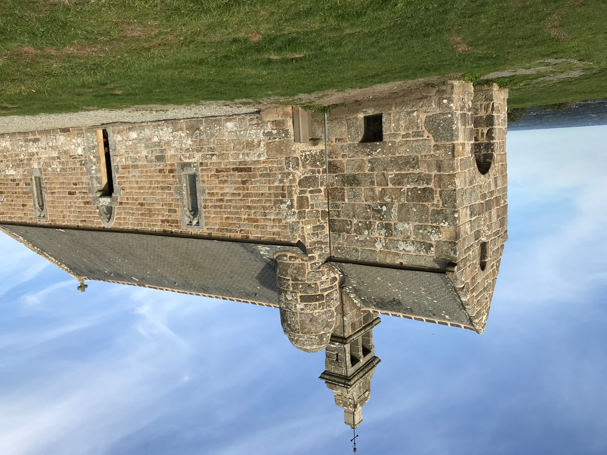
***
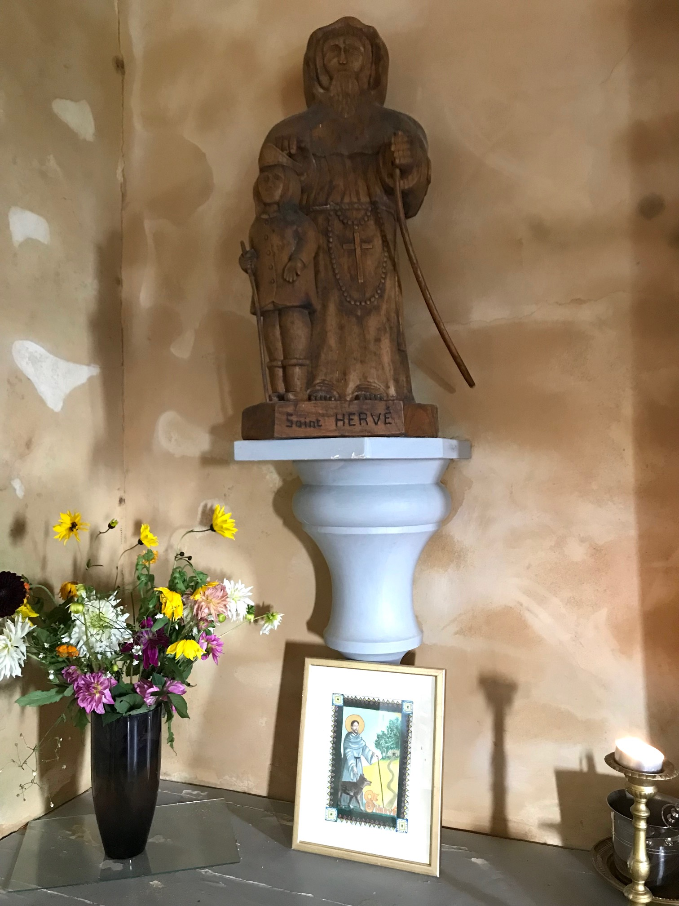
Saint-Hervé Chapel nowadays (Photos J. Philippe-Quentin)
It makes of Gwynlaff a
contemporary of King Arthur
's, another legendary figure who, so writes Nennius in his "Historia Brittonum" (ca. 960), fought against the Saxons in particular at the Battle of Mount-Badon which another document, the "Annales Cambriae (also ca 960) dates to 516. If Gwenchlan did live , he lived in the 6th century.
Anatole Le Braz' Gwenc'hlan
As we saw on the
Series
page
Anatole Le Braz
was a severe critic of La Villemarqué's collection. Yet, in his "Tales of Sun and Mist" (1905) he wrote a very inspiring description of the Ménez-Bré, a 300 meter "mount" west of Guingamp which he assures:
"Was the place where the 6th century Bretons deliberately located the sepulchre of their famous Gwenc'hlan whose memory and songs had accompany them on their exodus. A Bard and a prophet like Merlin, Gwenc'hlan, whose name means "Holy race", was considered one of his most brilliant disciples."
Le Braz does not jib at quoting the first three stanzas of the Barzhaz Breizh poem when he evokes
"the bitter moan placed into his mouth, in his collection, by Viscount de La Villemarqué".
He adds:
"Throughout old "Domnonea" [the area along the North coast of Brittany], his predictions were well-known. They even were committed to writing and some of them were allegedly kept, two hundred years ago by the monks of Landévennec. Today it is only in the
folk's memory
that you may look for an albeit fading echo of the sibylline words of his 'diou-ganoù'".
The source of the oral tradition about this prophet is none other than Marguerite Philippe alias
Marc'harid Fulup
(1837 -1909). Also known as 'Godik ar Vognez' (One-armed Maggie), she was
Luzel
's main informer at Plouaret and he learned of her singing over 259 songs. In the present case she conveyed tales about the mysterious character.
He dwelled in Manor Run-ar-Gov west of the mount
and, like an owl, he could turn his head all the way round.
He was aware of things to come, but he spoke little except with crows and migrating birds that would inform him of events afar.
Once, he fought an invisible foe, wielding his sword from dawn to sunset, atop the Ménez-Bré. He had slain a horde of invaders of the future and the clouds in the sky hung red with their blood.
With the feather quill of
a sea eagle
he wrote his last will and testament. His riches were immense and he would keep them, along with his books and his secrets, in his grave that would be held of all unknown. The Bretons should go on living in poverty from which their keenest joy arises. Twelve wagons, heavily loaded with gold and driven by blindfold men, were led around the Ménez-Bré several times, until their load was engulfed by a bottomless pit. Then a profound sigh was heard. That's all what's known about Gwenc'hlan's death.
"Every hundred years, so they say, in the first new moon night, the Ménez-Bré cracks open...If you were bold enough to slip in, a magic radiance would lights up the place and you would be guided down to Gwenc'hlan ... [whose] ghost haunts the depths of the mount, as does Saint Hervé's spirit the top of it."
(The Ménez-Bré is topped by a chapel dedicated to this holy man: one miracle-worker is replaced by another).
Similar fictional stuff is reported by M.
Le Teurs
in the "Journal of the Finistère Archaeological Society" (1875-1876, p.179). It is about the parish Saint-Urbain in Finistère where a mound, named
"Torgen ar Sal"
is considered to be "Gouinclé's grave" where he rests with his treasures.
The customary interpret of Marguerite Philippe,
François-Marie Luzel
, never heard of Gwenc'hlan. At the very most he could report:
"At Louargat, at the foot of the Ménez-Bré, an old woman whom I asked told me once that there was in former times on top of the mount,
ur warc'hlan
. Was it an alteration of Gwinglaff? Besides, she could not say if it was a man or an animal."
The conclusion drawn by R. Largillière from these elements in his study on Gwenc'hlan, is that
"
the literary fictions created by 19th century authors have pervaded the imagination of the country folks"
and that, far from truly reporting, as he asserts he does, Marguerite Philippe's narrative, Anatole Le Braz embellished it a great deal. This is all the more probable, in his opinion, since in an article published in "La Plume" on 1st March 1894, he wrote:
"Who had not loved to depict as part of genuine lore this great bardic spectre ... atop the lonely Ménez-Bré? [as did La Villemarqué] ...But a serious critic must kiss it goodbye. I don't resign myself to it without regret".
Did Le Braz, eleven years later, really succumb to the mirage and inflict on the popular muse the dishonesty for which he used to reproach La Villemarqué ? One may doubt it.
Is the Barzhaz Breizh: A "bad book"?
In 1960 F. Gourvil becomes more peremptory and at Rennes University he submits an essay published later on under the revealing title: "The authenticity of the Barzaz Breiz :How its defenders try to rescue a bad book". Then, in 1966, he criticizes, maybe with some reasons, "The language of the Barzaz Breiz and its irregularities".
This extreme disparagement is greatly invalidated by
Mr Donatien Laurent
's research work. This musician and linguist discovered in 1964 in Keransquer Manor, near Quimperlé, a mansion belonging to La Villemarqué's family, the latter's
collecting notebooks
. These documents clearly demonstrate
that "Kervarker" (Breton equivalent to "La Villemarqué) had
a very thorough command of the Breton language
.
Even if took excessive liberties with rules set later on by the scientists, the Keransquer papers also are an irrefutable
proof for the genuineness of most of the songs
F. Gourvil and other antagonists (Le Men, Luzel, F. Lot, d'Arbois de Jubainville, A. Le Braz, etc...) had branded as forgeries.
Conclusion
Like the other mythological and old-historical songs in the Barzhaz, this "diougan" (prophecy) very likely combines a splendid, authentic popular tune with lyrics,
"maybe fragments of a poem included in a prose narrative"
(as suggested by Donatien Laurent) that were really collected in Melgven by the author (or his mother), even if many elements underwent complete changes, like the
"Vespers of the Frogs"
with which the 1845 edition of the Barzhaz opened.
Was the ultimate source of the song remembered by Clémence Penquerc'h the Barzhaz itself? Donatien Laurent answers:
"It won't be easily admitted that an illiterate and monolingual singer could, of all the pieces included in the collection, remember especially this one, quite different from her usual repertoire in tone and inspiration, which
the Lady of Nizon
also mentions
(as sung by Annaïk Le Breton).
When all is said and done, one can only regret, as does Donatien Laurent that
"nobody thought of paying a visit to Clémence Penquerc'h, daughter of the Marie-Jeanne in the Tables, who was alive until 1908!"
Even if "Gwenc'hlan's prophecy" is to a large extent a fiction, based on bookish reminiscences, created by La Villemarqué to serve his different purposes, this poem has a remarkable evocative strength.
These intrinsic qualities were a capital factor in the enthusiasm aroused by the "Barzhaz Breizh" throughout Europe: here are, for instance, a free adaptation of "Arthur's March" and a translation of the first stanzas of "Gwenc'hlan's prophecy" published in 1912 in
DUTCH
.
Note: Beside
"Aux Sources" by Donatien Laurent
, a great part of the explanations above are based on "Théodore de La Villemarqué et le Barzaz-Breiz" by Francis Gourvil (1968), a reprint of his doctoral thesis.
The other main source is the essay "Gwenc'hlan" published by R. Largillière in: "Annales de Bretagne, Tome 37, # 3-4, 1925. pp. 288-308.
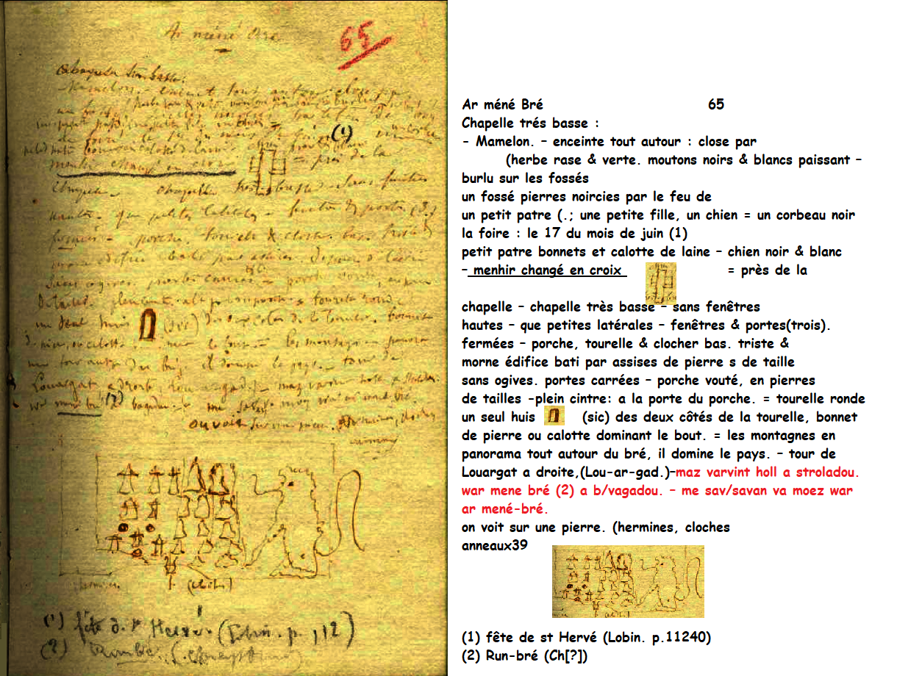
Page 54 du Carnet 3: "Ar Menez Bré" Dessins de la main de La Villemarqué
La prophétie de Gwenc'hlan sur laquelle s'ouvrait le Barzhaz dans la première édition, celle de 1839, tient une place particulière dans le parcours personnel de La Villemarqué.
Le modèle gallois
La tradition des congrès d'artistes gallois remonte au moins au 12ème siècle. Le premier "Eisteddfod" d'envergure se tint à Carmarthen, en 1451. Le second, dont on ait gardé trace, à Caerwys, en 1568. Au fil du temps, le niveau exigé des compétiteurs à l'"eisteddfod" alla en se dégradant. En 1789, un "eisteddfod" fut réuni à Corwen où, pour la première fois, le public fut admis.
Iolo Morganwg
fonda le
"Gorsedd Beirdd Ynys Prydain"
(Haute session des bardes de l'île de Bretagne) en 1792, en vue de restaurer et remplacer l'ancien "eisteddfod". Le premier "eisteddfod" nouvelle manière se tint à Primrose Hill, près de Londres en Octobre 1792.
Le mérite d'avoir établi des relations entre ce mouvement et les intellectuels de Basse-Bretagne revient à la
Société biblique
de Londres qui avait commandé à
Le Gonidec
une traduction bretonne de l'Ancien Testament. Celui-ci, dans une lettre du 4 février 1837, signala au Révérend Thomas Price, président de l'association culturelle galloise "Cymdeithas Cymreigyddion y Fenni" deux défenseurs zélés de la langue bretonne, le poète Brizeux et un "antiquaire très studieux", Hersart de la Villemarqué. Ces derniers furent aussitôt admis comme membres d'honneur de cette association, ainsi que
Le Gonidec
.
Le jeune chartiste écrivit alors au président pour être admis à concourir, lors du prochain "eisteddfod" qui devait se tenir à
Abergavenny
, pour la rédaction d'un mémoire sur "l'influence des traditions galloises sur les littératures européennes". A l'appui de sa demande, il signalait qu'il avait recueilli un grand nombre de chants des bardes d'Armorique parmi lesquels, disait-il, certains remontaient au Vème siècle. Grâce à une de ses relations, le comte de Montalembert, pair de France, il obtint du ministre de l'Instruction publique une mission officielle assortie d'une allocation de 600 francs. Le départ de La Villemarqué et de six de ses amis eut lieu fin septembre 1838.
La Villemarqué revint de l'"eisteddfod" de 1838 avec un "rapport sur la littérature du Pays de Galles", daté de mai 1839, où il soutient que les contes gallois qui ont servi de modèle à Chrétien de Troyes furent importés de Bretagne. Il y attire aussi l'attention du ministre sur l'intérêt d'assemblées telles que ces eisteddfods "comme soutien du vieux patriotisme... [contribuant] à maintenir une heureuse harmonie entre le pauvre et le riche... [Le peuple est attaché à une aristocratie qui] veut partager avec lui des biens plus précieux que les fruits grossiers de la terre".
Admis dans "l'ordre des bardes de l'Île de Bretagne", il avait trouvé là-bas un modèle à suivre, dans les efforts entrepris par
Owen Jones
(1741-1814), un fourreur londonien également connu sous son de nom de barde,
"Myvyr"
, pour publier entre 1801 et 1807 avec un ancien maçon devenu homme de lettres,
Edward Williams
(1747-1826) dit
"Iolo Morgannwg" (Edouard de Glamorgan)
et l'auteur d'un célèbre dictionnaire gallois-anglais,
William Owen Pughe
(1769-1835) les "monuments populaires de la patrie" sous le titre
"Myvyrian Archaiology of Wales"
. Les références au "Myvyrian" sont innombrables dans le Barzhaz.
La "Myvyrian Archaiology of Wales"
(extraits de
Mary Jones' Celtic Encylopedia
)
Ce fut l'un des premiers recueils imprimés de littérature galloise du Moyen-âge, constitué à partir de manuscrits divers, dont les "Quatre Livres anciens de Galles". C'est aussi la source où puisèrent de nombreux traducteurs de littérature galloise, jusqu'à la publication par J. Gwenogwryn Evans des "Editions diplomatiques des manuscrits de Galles".
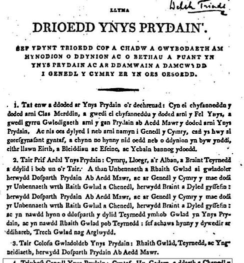
Malheureusement la Myvyrian Archaiology accueillit aussi les manuscrits provenant de la collection de
Iolo
Morgannwg
, considéré alors comme une autorité en matière de littérature et de folklore gallois, mais que le 20ème siècle a démasqué comme un
faussaire
. Toutefois, toutes ses contributions n'étaient pas de sa fabrication.
Le 1er tome était composé de "bruts", c.à.d. d'histoires des Britons, en particulier une version galloise de "l'Histoire des rois de Bretagne" de Geoffroy de Monmouth.
Le second tome était consacré aux
Triades galloises
(Trioedd Ynys Prydain), malheureusement "améliorées" dans leur forme par Morgannwg (à savoir, réécrites et augmentées, en particulier de la soi-disant "troisième série", qui représente à elle seule le tiers du volume).
Le troisième tome se composait de poèmes tirés d'authentiques manuscrits, dont le Livre noir de Carmarthen, le Livre rouge de Hergest, le Livre de Taliesin, le Livre d'Aneurin, le Livre rouge de Talgarth, ainsi que d'autres manuscrits sans titres. Naturellement, on y trouve aussi des forgeries de Morgannwg, disséminées parmi des tonnes de documents authentiques.
Le jeune La Villemarqué connaissait-il le gallois?
Comme on le voit sur le fac-similé ci-dessus, cette "Myvyrian Archaiology" est rédigée, à part la table des matières et quelques notes isolées en anglais,
exclusivement en gallois
.
Les références à cet ouvrage ("Myvyr.") en bas de pages du Barzhaz, sont particulièrement abondantes dans l'édition 1839. Outre les 24 références dans le "Préambule" du recueil qui commence par une citation en exergue transcrite dans l'orthographe de Le Gonidec, des "Triades de l'Île de Bretagne", tirée du tome III, l'"Archéologie Myvyrienne" est mise à contribution à propos de 8 chants (Gwenc'hlan, Merlin Devin et Merlin Barde, la Peste d'Elliant, Héloïse, la Fiancée de Satan et deux Chants de mariage) totalisant 17 références. En 1845 trois nouveaux chants (la Ville d'Is, les Séries, le chevalier Bran) portent ce total à une trentaine. On s'étonne à juste titre de l'abondance de ces citations d'un ouvrage aussi difficile d'accès.
Francis Gourvil (p. 90 de son "La Villemarqué") écrit:
"Quant aux notes qui suivent le traduction [de Guinclan], elles sont pleines de noms gallois d'allure barbare: Aneurin, Llywarch Hen, Goddodin... pris dans la "Myvyrian Archaiology". Or cet ouvrage, La Villemarqué était à peu près le seul à le connaître de ce côté-ci du détroit et il supposait chez celui qui le citait à tout propos
(d'après des traductions anglaises)
une connaissance approfondie de la langue galloise et d'une littérature dont si peu de gens en France et en Europe savaient qu'elle existait."
On ignore quelles sont les "traductions anglaises" dont parle Gourvil.
La
"Vindication of the genuineness of the ancient British poems of Aneurin, Taliesin, Llywarch Hen and Merdhin"
de
Sharon Turner (1768-1847)
publiée en 1803 ("Justification de l'authenticité des anciens poème britonniques attribués à Aneurin etc.")
est citée en note dès la 7ème page (vii) de l'introduction. Elle est citée une seconde fois, page xii, pour justifier l'assimilation du barde Gweinchgant (alias Ciant) dont parle Nennius au Guinclan breton, rebaptisé "Gwenc'hlan".
Elle a servi de toute évidence à La Villemarqué pour rédiger ses longs exposés sur la situation sociale et le rôle des bardes insulaires, sur la philosophie des druides, leur croyance à la métempsychose et aux cercles de l'existence et sur les Triades. Cet ouvrage comprend plusieurs citations de poèmes d'Aneurin, Taliessin, Llywarch Hen et Myrddin.
Elles ont pu aider le jeune La Villemarqué à se repérer dans l'ouvrage de Myvyr, mais n'ont pu lui fournir tous les éclaircissements nécessaires à la rédactions des nombreuses références sur des sujets divers dont est émaillé son recueil.
On trouvera à la suite du présent encart un tableau synoptique montrant comment il a pu, par exemple, se servir de la "Vindication" et de la "Myvyrian" de 1801-1807 pour faire le rapprochement entre l'"Elégie de Cynddylan" (les aigles de la rivière Eli) et la "Prophétie de Gwenc'hlan" (repas des aiglons).
Il n'en reste pas moins qu'on ne peut faire correspondre à une traduction anglaise de la "Vindication" qu'un nombre restreint de notes "cf. Myvyrian".
Les notes des pages vii et xii de l'Introduction du Barzhaz 1839 ont disparu, ainsi que quasiment toutes les références à des auteurs de langue anglaise dans les éditions suivantes, peut-être parce qu'elles dénonçaient la dette contractée par La Villemarqué envers ceux-ci. La note vii conseillait:
"Voyez l'excellente dissertation de Sharon Turner 'A vindication...' London, 1803
". Elle visait à expliciter la phrase:
"Les plus anciens monuments [des bardes domestiques gallois] dont l'authenticité est désormais à l'abri de toute objection."
L'ouvrage de Turner, (consultable en ligne) combiné avec la "Myvyrian", édition 1801-1807, a certainement inspiré à La Villemarqué, outre les longues considérations consacrées au même sujet dans l'Introduction du Barzhaz, son étude des
"Bardes bretons"
en 550 pages, publiée en 1850. Dans ladite étude, il utilise, pour reproduire les textes gallois, l'orthographe de Le Gonidec, ce qui lui sera reproché non seulement par les celtistes britanniques, mais aussi par son compatriote Ernest Renan dans un article paru le 1er février 1854 dans la Revue des Deux Mondes.
Jubainville accusera Kervarker de ne pas connaître le breton. La
méconnaissance totale du gallois
que Gourvil lui impute est, sans doute, une seconde
médisance
aussi peu fondée que la première.
La Villemarqué a dû s'intéresser au gallois avant son séjour au pays de Galles (commencé en décembre 1838) quand il fournit, en avril 1838, à Lady Guest une transcription du "Chevalier au Lion" de Chrétien de Troyes à partir d'un manuscrit de la bibliothèque royale.
Cette transcription devait être annexée à la traduction anglaise par cette dame au conte gallois "Iarlles y Ffynnawn" (Yvain ou la Dame de la Fontaine), publié en 1839 dans le 1er Tome d'un recueil intitulé "The Mabinogion from the Llyfr Coch o' Hergest...".
Si bien que La Villemarqué devait, dès avant l'acquisition de la "Myvyrian Archaiology" en 1839, connaître suffisamment de grammaire et de vocabulaire gallois pour identifier, - avec l'aide de Gallois rencontrés sur place ou d'ouvrages tels que celui de Sharon Turner et en s'appuyant sur la table des matières en anglais de la "Myvyrian" -, les passages de ce recueil qu'il pouvait utilement exploiter. Quand ses traductions sont erronées ou imprécises, elles portent généralement sur des mots et des tournures qui font toujours débat parmi les linguistes.
C'est cependant sa connaissance imparfaite du gallois en 1839 qui explique sans doute que ce n'est que dans l'édition 1845 du Barzhaz que La Villemarqué fait le rapprochement entre le chant populaire breton
Yannig Skolan
et le poème gallois "Yscolan" qui figure à la p. 104 du tome I de la "Myvyrian".
La soi-disant pérennité des traditions druidiques en Bretagne
Dans l'introduction au Barzhaz Breizh, édité pour la première fois en 1839 à 500 exemplaires, La Villemarqué développe la thèse selon laquelle:
" il s'est conservé...des bardes en possession de traditions druidiques... en Armorique...jusqu'à nos jours"
(Citation de l'historien Jean-Jacques Ampère).
On appréciera son habileté à détourner un texte d'
Ausone
(env. 310 - env. 394), pour démontrer que ces bardes existaient au 4ème siècle après J.C... Il est question dans l'original d'un certain
"Phoebicius qui, [bien qu'il fût]
gardien-du-temple
(Beleni
aedituus
) de Belenos, [n'en tira aucun profit. Et pourtant], il était issu, paraît-il, d'une famille de druides armoricains
(stirpe satus druidum gentis aremoricae)".
Dans l'"Introduction au Barzhaz" (page VI de l'édition de 1839, page XVI de celle de 1867), on lit:
"Ausone connut l'un deux qui était prêtre du soleil...Il se nommait Phoebicius; il chantait-et-composait-des-hymnes-en-l'honneur-du-dieu (aedituus!) Belen. Il appartenait à une famille de druides de la nation armoricaine."
Ce qui prouve que
"l'Armorique...[par] sa position géographique, ses forêts, ses montagnes et la mer avait été mise à l'abri des influences étrangères et [que] ses bardes conservaient encore au 4ème siècle de l'ère chrétienne leur caractère primitif... Mais ces poètes ne devaient pas tarder à dégénérer: Ausone semble l'insinuer quand il fait observer que
Phoebicius est pauvre malgré son illustre origine et que son état ne l'a guère enrichi."
Remarque: Le sens d'"aedituus, aeditimus, aeditumus" est bien connu: Gardien chargé de la surveillance d'un temple. Il en avait les clefs, l'ouvrait aux heures marquées, en surveillait le balayage et le nettoyage et servait de guide aux étrangers, leur expliquant les raretés et les œuvres d'art que l'édifice contenait (Pline. XXXVI, 4, 10). Cet emploi était honorable (Dict. d'Antony Rich de 1883). L'acception de "barde" retenue par "La Villemarqué" est un contresens.
Ce contresens n'est peut-être pas volontaire dans la mesure où il pourrait résulter:
- soit d'une homonymie approximative avec "aède" (barde grec),
- soit du fait que
Daniel Lous Miorcec de Kerdanet
(1792 - 1874) faisait figurer Phoebicius dans ses "
Notices chronologiques
sur les théologiens , jurisconsultes, philosophes, artistes, littérateurs , poètes,
bardes
, troubadours et historiens de la Bretagne , depuis le commencement de Père chrétienne jusqu'à nos jours..." publiées à Brest en 1818.
Cependant,
Miorcec donne une traduction à-moitié exacte d' "aedituus" lorsqu'il écrit que Phoebicius était "prêtre ou sacristain" du temple d'Apollon-[...] Belenus;
la raison de l'inclusion de ce personnage dans la liste des auteurs bretons, est qu'il obtint par la suite une chaire de grammaire (latine) à Bordeaux.
C'est à l'évidence un point de vue que La Villemarqué ne partage pas:
La preuve que cette tradition bardique existe encore au moment de l'arrivée des Bretons insulaires et chrétiens est fournie par un "vénérable débris du bardisme" païen:
"La Prédiction de Gwenc'hlan"
, la fameuse pomme de discorde!
L'"Hérésie Néo-Druidique" selon Davies et Herbert
La Villemarqué a pu être aussi influencé par l'Archidoyen du Merton College d'Oxford,
Algernon Herbert
(1792 - 1855), qui s'était fait une spécialité des spéculations ésotériques et avait publié en 1838 un
"Essai sur l'Hérésie Néodruidique en Britannia"
. Ce texte faisait suite à sa "Brittania après les Romains", dont le premier tome était paru deux ans plus tôt (ouvrage cité par La Villemarqué en page II de l'Introduction de 1839). Il y reprenait avec brio la thèse exposée en 1809 par le pasteur gallois
Edward Davies
(1756 - 1831) dans sa
"Mythologie des Druides de Bretagne"
à propos du poème "les Gododdin" d'Aneurin: Un vague attachement à la religion des druides était à l'origine d'une apostasie chez les chrétiens de l'Île de Bretagne. Les bardes, "tout en se disant chrétiens et en s'abritant derrière un vocabulaire chrétien, professaient en secret un culte païen ésotérique, le néo-Druidisme" (Walesby William F. Skene dans "Les Quatres Livres anciens", 1868). Les poèmes de Taliesin étaient pleins d'allusions à ce culte, affirmait-il.
Ces deux auteurs produisirent des traductions dans lesquelles ils sollicitaient les textes avec une telle conviction qu'on a effectivement longtemps vu l'expression d'une philosophie mystique dans les oeuvres des bardes gallois du 6ème siècle (Aneurin, Taliesin, Llyvarch Hen, Myrddin dont on trouve les poèmes dans les manuscrits connus comme les "Quatre anciens livres gallois" rédigés entre le 12ème et le 15ème siècle). On savait pourtant pouvoir trouver dans ces textes la description de faits historiques réels, comme l'avait démontré, dès 1803, l'historien Sharon Turner dans son "Histoire des Anglo-Saxons" - un peuple que celui-ci identifiait avec les
Scythes
!
Algernon Herbert analysait en réalité deux adresses d'Ausone (310 - 394) au réthoricien Attius Pateras:
"Toi qui es né à Bayeux et dont les ancêtres étaient druides, si ce qu'on nous rapporte est exact, tu tiens ton origine sacrée du temple de Bélénos. C'est de là que vous tirez vos noms:
- toi, celui de Pateras, car c'est ainsi que les mystiques d'Apollon nomment leurs prêtres;
- ton père et ton frère de Phébus;
- et ton fils de Delphes."
"Je ne veux pas non plus passer sous silence le vieil homme qu'on appelle Phoebicius, qui fut un "hymniste" de Bélénos, ce qui ne l'a pas enrichi. Mais cependant, étant, comme tous en conviennent, le descendant d'une famille de Druides chez les Armoricains, il obtint par l'entremise de son fils, une chaire de professeur à Bordeaux".
Herbert déduisait de ces textes, qu'Attius Pateras était un adepte de Mithra, car "Pater", Père (du soleil invaincu), était le plus haut des huit grades auxquels les zélateurs du dieu solaire indo-iranien pouvaient accéder, les autres allant de "corax", corbeau à "heliodromos", messager du soleil.
Selon lui,
"le Néo-Druidisme était une hérésie, ou plutôt une apostasie, dans laquelle le culte de Mithra était adapté aux croyances des druides, avec des conceptions et des aspirations semblables à celles de la plupart des sectes gnostiques et orientales. Il méritait qu'on s'y arrête en raison de l'influence qu'il exerça sur le roman courtois et la poésie où la Bretagne d'Arthur a pris la place des thèmes éculés d'Ilion et de Thèbes."
WELSH "DRUIDIC" TRADITION AND ITS ALLEGED SURVIVAL IN BRITTANY
"Guinclan's prophecy", which came first in the "Barzhaz Breizh" collection, in the 1839 edition, has played a very special part in La Villemarqué's personal career.
The Welsh model
The tradition of meetings of Welsh artists dates back to at least the 12th century. The earliest large scale "Eisteddfod" took place in Carmarthen, in 1451. The next recorded "eisteddfod" was held in Caerwys in 1568. As time went by, the standard of the main "eisteddfod" deteriorated. In 1789, an "eisteddfod" was held in Corwen where for the first time the public were admitted.
Iolo Morganwg
founded the
"Gorsedd Beirdd Ynys Prydain"
(High-session of the Bards of the Isle of Britain) in 1792 to restore and replace the ancient "eisteddfod". The first "eisteddfod" of the revival was held in Primrose Hill, London in October, 1792.
The Breton intellectuals are indebted to the
Biblical Society
of London for creating links with their colleagues in Britain, as they had appointed
Le Gonidec
to translate the Old Testament into Breton. The latter mentioned in a letter sent on 4th February 1837 to the Reverend Thomas Price ,the Chairman of the Welsh cultural society "Cymdeithas Cymreigyddion y Fenni" two staunch defenders of the Breton language, the poet Brizeux and a very "zealous scholar" named Hersart de la Villemarqué. The both were immediately admitted to honorary membership, along with
Le Gonidec
.
The young man wrote then to the Chairman and asked to compete, on the occasion of the next "eisteddfod" whose venue was the little town
Abergavenny
, in a contest to submit a essay on the "influence of Welsh Tradition upon European literatures". In support of his request he pointed out that he had gathered a large amount of Breton Bardic songs some of them, so he wrote, could be dated as far back as to the 5th century. Thanks to one of his acquaintances, Count de Montalembert, a Peer of France, he was entrusted by the Ministry of Eductation with an official mission accompanied with a subsidy of 600 Francs. By the end of September 1838 La Villemarqué left for Wales with six of his Friends.
He came back from the 1838 "Eisteddfod" with a "Report on the Welsh literature", dated May 1839, where he explained that the Welsh tales used as models by Chrétien de Troyes were in fact imported from Brittany. He also draws the Minister's attention to the importance of literary gatherings like these eisteddfods "as supports of old patriotism...[that contribute] to maintaining a harmonious relationship between poor and rich...
["The lower classes support an aristocracy who] are willing to share with them more precious wealth than mere fruit of the soil".
He had been admitted as a member of the "Order of Bards of the Isle of Britain" and found a model in the endeavours made by
Owen Jones
(1741 - 1814), a London furrier also known as Bard
"Myvyr"
, to publish in Welsh without translations, between 1801 and 1807, with a former stonemason turned into a Welsh man of letters,
Edward Williams, alias "Iolo Morgannwg"
(Edward of Glamorgan, 1747 - 1826) and
William Owen Pughe
(1769-1835), the "literary heritage of the Welsh nation" under the title
"Myvyrian Archaeology of Wales"
.
References to the "Myvyrian" are countless in the Barzhaz.
Y Myvyrian Archaiology
(excerpts from
Mary Jones' Celtic Encylopedia
)
It was one of the earliest printed collections of medieval Welsh literature, culled from many manuscripts, including the so-called "Four Ancient Books of Wales." It served as the source text for many translators of Welsh literature until the advent of J. Gwenogwryn Evans' diplomatic editions of the medieval Welsh manuscripts.
Unfortunately, The Myvyrian Archaiology also used the manuscripts in the collection of
Iolo Morgannwg
, who was considered an authority on Welsh literature and folklore at the time, but was revealed as a
forger
in the twentieth century. However, not all that Morgannwg had was of his own hand.
The first volume were "bruts", i.e. histories of the Britons, particularly one of the Welsh redactions of Geoffrey of Monmouth's "History of the Kings of Britain".
The second volume contained the
Welsh Triads
(Trioedd Ynys Prydain), though unfortunately in Morgannwg's "improved" form (i.e., his rewrites and additions, amounting to an entire third of the triads, including the so-called "third series").
The third volume consisted of poetry from various legitimate manuscripts, including The Black Book of Carmarthen, The Red Book of Hergest, The Book of Taliesin, The Book of Aneurin, The Red Book of Talgarth, as well as many unnamed manuscripts. Of course, it also includes some of Morgannwg's forgeries, but that is to be expected, and they do not seem to outweigh the tons of authentic material.
Did young La Villemarqué know Welsh?
As evidenced in the oppositr facsimile, the "Myvyrian Archaiology" is written, apart from the table of contents and scarce notes and remarks,
exclusively in Welsh
. The references "Myvyr." at the bottom of the pages of the Barzhaz, are particularly abundant in the 1839 edition. In addition to the Preamble to the collection - which begins with an epigraph quotation, transcribed in Le Gonidec's spelling, from the "Triads of the Isle of Britain" in volume III -, the "Myvyrian Archeology" is quoted in connection with 8 songs (Gwenc'hlan, Merlin Devin and Merlin Barde, the Plague of Elliant, Héloïse, the Bride of Satan and two Wedding songs) totaling 17 references. In 1845 three new songs (the Town of Is, the Series, Bran the Knight) bring this total to about thirty. We are rightly astonished by the abundance of these quotations from a book that is so difficult to access. Francis Gourvil (p. 90 of his "La Villemarqué") writes:
"As for the notes which follow the translation [of "Guinclan"], they are full of Welsh names of barbaric appearance: Aneurin, Llywarch Hen, Goddodin... taken from the "Myvyrian Archaiology". Now this work which, except La Villemarqué, almost nobody knew on this side of the Channel, demanded from the one quoting it every now and then
(after English translations)
a thorough knowledge of the Welsh language and literature, whereas only a very few people in France and Europe were aware that they existed."
Yet Gourvil omits to tell us which "English translations" he means.
Sharon Turner's (1768-1847)
"Vindication of the genuineness of the ancient British poems of Aneurin, Taliesin, Llywarch Hen and Merdhin"
published in 1803 is quoted in a note on the 7th page (vii) of the "Introduction" to the 1839 Bazhaz Breizh. It is quoted a second time, on page xii, to justify the assimilation of the bard Gweinchgant (alias Ciant) mentioned by Nennius to the Breton prophet Guinclan, renamed "Gwenc'hlan".
It was obviously used by La Villemarqué to write his lengthy statements on the social situation and the role of the bards of the Isle of Britain, on the philosophy of the druids, their belief in metempsychosis and circles of existence, and on the Triads. This work includes several quotations from poems by Aneurin, Taliessin, Llywarch Hen and Myrddin.
They may have helped young La Villemarqué to struggle his way within Myvyr's only Welsh work. But Turner's translations could not provide La Villemarqué with all particulars required for the drafting of the references to the "Myvyrian" that abound in the Barzhaz. Following the present insert chart there is a synoptic table showing how he possibly was prompted by the "Vindication" and the "Myvyrian" of 1801-1807, to make a connection between the "Elegy of Cynddylan" (the eagles of the Eli river) and the "Prophecy of Gwenc'hlan" (meal for the eaglets). The fact remains that English translations from the "Vindication" can only be matched with a limited number of "cf. Myvyrian" notes.
The notes on page vii and xii of the Introduction to the Barzhaz 1839 disappeared in subsequent editions, perhaps because it revealed a model followed a little too closely. It advised the reader:
"See Sharon Turner's excellent essay 'A vindication...' London, 1803"
, while explaining the sentence:
" [The Welsh domestic bards'] oldest monuments whose authenticity is now at free from objection."
Turner's work (available online) combined with the "Myvyrian"
certainly inspired La Villemarqué to write his "Breton Bards", a study in 550 pages, published in 1850. In it he uses, to render the Welsh texts, the spelling of Le Gonidec, which was reproached to him not only by the British Celtists, but also by his compatriot Ernest Renan, in an article published on February 1, 1854 in the Revue des Deux Mondes.
Jubainville was to accuse, later on, Kervarker of not knowing Breton. The
total ignorance of Welsh
imputed by Gourvil to said La Villemarqué is, without doubt, another
slander
as unfounded as the first.
La Villemarqué must have been interested in Welsh before his stay in Wales (from December 1838) when he provided, in April 1838, Lady Guest with a transcription of Chrétien de Troyes's "Chevalier au Lion" from a manuscript kept in the Royal Library
. This transcription was to be appended to this lady's English translation of the Welsh tale "Iarlles y Ffynnawn" (Yvain or the Lady of the Fountain), published in 1839 in the 1st Volume of a collection entitled "The Mabinogion from the Llyfr Coch o 'Hergest...".
So that before 1839, when he purchased this collection in Wales, La Villemarqué must have been already conversant enough in Welsh (grammar and vocabulary) to identify, based on the English table of contents, the passages of the Myvyrian that he could relevantly exploit.
La Villemarqué's faulty or imprecise translations generally relate to words and phrases that are still in dispute among linguists.
However, it is his imperfect knowledge of Welsh in 1839 which undoubtedly explains that it was only in the 1845 edition of Barzhaz that La Villemarqué made the connection between the popular Breton song
"Yannig Skolan"
and the Welsh poem "Yscolan" which appears on p.104 of volume I of the "Myvyrian".
The alleged survival of Druidic antiquities in Brittany
In the introduction to the Barzhaz Breizh, 500 copies of which were first printed in 1839, La Villemarqué elaborates a theory to the effect that:
"
Bards
have maintained the Druidic traditions... in Armorica...and passed them on to the present days."
(Quotation of the historian Jean-Jacques Ampère).
To "prove" the existence of these bards in the 4th century A.C., he is astonishingly clever at diverting a text of
Ausonius
(ca 310 - ca 394) about a certain
"Phoebicius, who, being
'attendant'
of the Belenos temple
(Beleni
aedituus
)
, [did not draw any profit from his position, though] he was said to be a scion of an Armorican druid family
(stirpe satus druidum gentis aremoricae)."
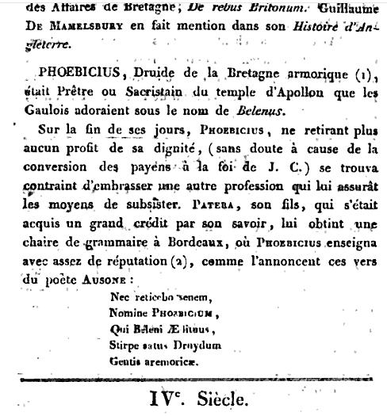
The "Introduction to the Barzhaz" (page VI in the 1839 edition, page XVI in the 1867 edition) reads thus:
"Ausonius knew one of them who was a priest of the Sun...His name was Phoebicius. He 'sang and composed hymns in the honour' (=aedituus) of Belenos. He belonged to a race of Druids of the Armorican nation."
This shows that
"Armorica [due to] its geographic situation, its woods and mountains and the sea has been long protected against foreign influences and that its bards still kept in the 4th century A.C. their primitive character... though they were at that time already decaying: That's what Ausonius infers when he states that Phoebicius is poor in spite of his illustrious origin and remained so in spite of his position as a bard."
Remark: there is no doubt about the meaning of "aedituus, aeditimus, aeditumus": a temple attendant who kept the keys of the edifice which he opened and closed at fixed hours, supervised its upkeep and acted as a cicerone for strangers, explaining the curiosities and works of art it contained (Plinius. XXXVI, 4, 10). This position was honourable (Dictionary of Anthony Rich from 1883).
Using the word in the sense of "bard" is a (purposeful?) mistranslation by La Villemarqué.
There is a possibility that he may have been misled
- either by the rough homonymy with the word "aède" (Greek bard)
- or by the fact that
Daniel Louis Miorcec de Kerdanet
(1792 - 1874) had included Phoebicius in his "
Chronological Notices
on theologians, jurisconsults, philosophers, artists, writers, poets,
bards
, troubadours and historians of Brittany since the outset of the Christian era to the present day..." published in Brest in 1818.
However,
Miorcec correctly translates "aedituus" when he states that Phoebicius had first been a "priest or sexton" in an Apollo-Belenos temple.
The reason for Phoebicius' admission in this list of Breton writers was that he became, later on, a teacher of (Latin) grammar in Bordeaux
Evidently, this is not the view held by La Villemarqué:
The proof that the bardic tradition still existed when Christian Britons, coming from Great Britain, first landed in Brittany is given by an "ancient relic of Pagan bardic poetry":
Gwenc'hlan's Prediction"
, the famous apple of discord!
The views brought out by Davies and Herbert of a "Neo-Druidic Heresy"
La Villemarqué might also have been influenced by the Archdeacon of Merton College (Oxford),
Algernon Herbert
(1792 - 1855), whose works were replete with esoteric speculations. Among them was an
Essay on the Neo-druidic Heresy
, 1838, which was an appendix to his "Britannia after the Romans" whose first part was published two years earlier (quoted by La Villemarqué on page iii of the 1839 Introduction). He took, brilliantly, the same views as the Welsh cleric,
Rev. Edward Davies
(1756 - 1831) in his
"Mythology of the British Druids"
(1809) with regard to the meaning of Aneurin's poem "Y Gododin": a lurking adherence to the Druidic religion had given raise to an apostasy among the Christians of the Isle of Britain. The bards, "under the name of Christians and the guise of Christian nomenclature, professed in secret paganism as an esoteric cult, Neo-Druidism" (Walesby William F. Skene in "The Four Ancient Books, 1868). Taliesin's poems were allegedly teeming with hints at this cult.
Both authors produced biased translations which were so convincing that the poetry of the great 6th century Welsh bards (Aneurin, Taliesin, Llyvarch Hen, Myrddin whose works are interspersed in manuscripts known as the "Four ancient books of Wales" dating to the 12th with 15th century) was for a long time considered as containing the expression of a mystic philosophy. In addition, these poems were considered as records of genuine historical events, in accordance with the views held, as early as 1803, by the historian Sharon Turner in his "History of the Anglo-Saxons" (who identified this latter people with the
Scythians
of old!)
Concerning Ausonius (310 - 394), Algernon Herbert investigated in fact his two addresses to the rhetorician Attius Pateras:
"Thou, born at Bayeux, with Druids for thy ancestors, If report does not deceive our belief, Derivest thy sacred race from the temple of Belenus.Thence do ye receive your names:
- Thou, that of Pateras, for so their ministers are called By the Apollinar Mystics,
- Your father and brother had their names from Phoebus
- And your son, from Delphi."
"Nor will I be silent concerning the old man By name Phoebicius, Who was a "hymner" of Belenos And did not enrich himself thereby, But nevertheless being, as it is agreed, Descended from a family of Druids Of the Armorican nation, Obtained by aid of his son A professor's chair at Bordeaux".
Herbert inferred from these texts that Attius Pateras was, in fact, a Mithriac, since "Pater" (Father of the unvanquished Sun) was the highest of the eight different titles under which the adepts of this Indo-Iranian solar cult received initiation, the others ranging from "corax" (raven) to "heliodromos" (sun's messenger).
In his view,
"Neo-Druidism was a heresy or apostasy, consisting of the sacra Mithriaca adapted to Druidism, similar to most of the gnosticizing and oriental sects in its views and tendency. It derives higher claim to attention from its influence over romance and poetry in which Arthurian Britannia replaced the worn out themes of Ilion and Thebes."
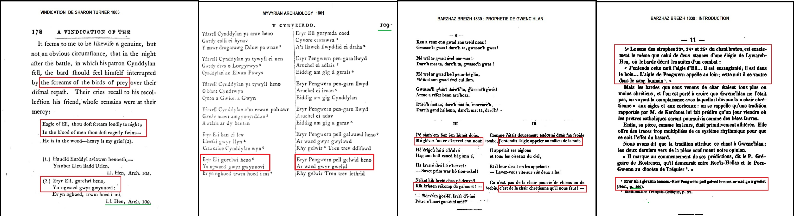
Comment la lecture de "A Vindication of the Genuineness..." de Sharon Turner
a pu inspirer à La Villemarqué un rapprochement
avec "La Prophétie", strophes 23 à 26, via la page 109 de la "Myvyrian", Tome I, édition 1801
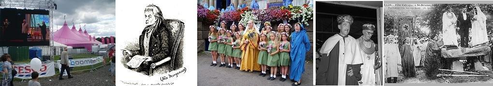
Le "maes" (champ) de l'Eisteddfod national gallois de 2007, Iolo Morganwg, Eisteddfod de Cornouailles 2007 et sa Dame (pour les couleurs cf.
Fête de juin
), Archidruide et lauréat de 1958, Goursez de Saint-Brieuc en 1906
Très tôt l'intelligence de ce jeune apprenti tailleur morlaisien qui publie une traduction bretonne de la Vie des quatre fils Aymon (Buhez ar pevar Mab Emon) lui vaut l'octroi d'une bourse d'études qui lui permet de suivre à la Faculté de Rennes les cours d'A. Le Braz et Georges Dottin et d'en sortir en 1913, avec la réputation d'être l'un des meilleurs spécialistes des littératures celtiques.
Pendant la "Grande" guerre, il est affecté au "contrôle postal" des plis en langue bretonne et fait imprimer à l'usage des soldats bretons des fascicules de chants dans leur langue maternelle.
A son retour il milite dans 4 organisations nationalistes bretonnes qu'il quitte en 1938. Pendant l'occupation, il est arrêté et emprisonné par la Gestapo et à la Libération, il se montre un adversaire convaincu de l'idéologie nationaliste bretonne.
En 1959, à 71 ans, il soutient une thèse sur le Barzaz Breiz de Théodore Hersart de la Villemarqué à l'Université de Rennes, dans laquelle il met en doute l'authenticité des principaux chants et affirme que certains furent inventés par La Villemarqué lui-même.
Malgré la réfutation de ces thèses extrêmes par Donatien Laurent en 1974, dans le bulletin de la Société Archéologique du Finistère, puis en 1989 avec la publication des "Sources du Barzaz Breiz" qui reproduit in extenso le premier carnet d'enquêtes du Barde (1834 - 1840), Gourvil n'en démordra pas.
Sa prévention contre Hersart s'étend même à des auteurs réputés intègres, mais qui eurent la faiblesse de toujours défendre le Barde. C'est ainsi qu'il cite (p. 260 du livre tiré de sa thèse) une lettre d'
Emile Ernault
, datée du 2 novembre 1879. Lors d'une visite à Keransquer, La Villemarqué lui avait montré ses cahiers d'enquête, lui avait lu une chanson
"qui avait bien l'air d'être un appel à la croisade
(il s'agit sans doute de l'énigmatique chant
Brezelour yaouank
du Carnet 2, pp. 256 - 258, qui semble décrire le blason de la famille noble Budes de Guébriant)
... et chanté le commencement de Merlin, en [lui] disant qu'il lui semblait encore voir et entendre la nourrice de qui il le tient... Pour bien des cas douteux, il [avait] consulté l'Abbé Henry...Il avait montré ces preuves à ceux qui les premiers avaient témoigné de l'intérêt à son livre... Il lui en restait encore assez entre les mains pour convaincre les incrédules...Dernièrement, il avait exhibé ces pièces à M. d'Arbois de Jubainville qui était passé chez lui et s'était montré convaincu."
Plus loin Ernault admet que La Villemarqué avait pu prendre pour une adhésion formelle de d'Arbois
"ce qui n'était pour lui qu'une formule d'assentiment courtois..."
.
Cette restriction conduit Gourvil à écrire que La Villemarqué
"
prétendait
détenir des preuves de sincérité en faveur de son oeuvre"
et que l'"
on en vient à se demander si [cette visite] a jamais eu lieu"
(!) Il cite pour justifier son scepticisme un article nécrologique de d'Arbois datant de 1896, "
évoquant des souvenirs
vieux de douze ou treize ans à peine
"
, où celui-ci écrit
"La première fois que je rencontrai [La Villemarqué], à Paris en 1883 ou 1884..."
(bien qu'on sache que D'Arbois était venu en Basse-Bretagne en septembre 1872).
Sans aller jusqu'à dire qu'Ernault est un naïf trompé par un affabulateur, il conclut que sa lettre
"n'est, hélas, qu'une curiosité de plus dans [cette] affaire...".
M. Donatien Laurent semble se rallier implicitement, en partie, à l'avis de Francis Gourvil, quand, page 26 des "Sources", il fait la courte liste de ceux à qui le Barde avait montré ses carnets: l'archiviste de Pau, M. Raymond, en novembre 1867; Emile Ernault, avant le 2 novembre 1879, comme on l'a vu; et Olivier de Gourcuff en septembre 1884. Il ne mentionne pas le passage de la lettre d'Ernault évoquant une visite de D'Arbois de Jubainville, à Keransquer, peu avant 1879.
D'autres auteurs, la folkloriste Françoise Morvan (née en 1958), Goulven Péron, etc. souligneront que les chants les plus marquants du Barzhaz sont absents des carnets de collecte publiés par D. Laurent (Gwenc'hlan, La Marche d'Arthur, Le Tribut de Nominoë, Le Cygne…) et n'excluront pas que certains de ces textes soient inventés de toutes pièces.
(Source: Wikipedia)
Very soon the intelligence of this young Morlaix tailor who published a translation of the "Life of the Four Sons of Aymon" (Buhez ar pevar Mab Emon) earned him a grant to study at Rennes University. When he graduated in 1913, he was held in high repute as extremely conversant with Celtic literatures.
During WWI he was engaged in the military board of censors to check the mail exchange in Breton language. He was instrumental in publishing song books for the Breton speaking soldiers.
Back in Morlaix, he was a militant in several Breton nationalist organizations successively, but resigned the last one in 1938. During the German occupation he was arrested by the Gestapo and put in jail. After the war he proved a fierce opponent to the Breton nationalist ideology.
In 1959, he was 71 years old, he attended a viva at Rennes University, questioning the authenticity of the most important songs of the Barzhaz Breizh, maintaining that some of them were invented by La Villemarqué himself. Though these extreme theses were demolished by Donatien Laurent in 1974, in the Bulletin of the Sociéte Archéologique du Finistère, then in 1989, when he published "Aux Sources du Barzaz Breiz" including a complete transcription of the Bard's first collecting notebook (1834 - 1840), Gourvil abode by his opinion.
His prejudice against Hersart also extends to reputedly honest authors who were weak enough to provide indefectible support to the Bard of Nizon. Thus, he quotes (on p. 260 of the book composed after his thesis) a letter written by
Emile Ernault
, dated 2 November 1879. On a visit the latter made to Keransquer manor, La Villemarqué showed him his record copybooks, read him a song which
"sounded like a crusading appeal ...
(this probably refers to the enigmatic song
Brezelour yaouank
from Carnet 2, pp. 256 - 258, which seems to describe the coat of arms of the noble family Budes de Guébriant)
...and sang the first verses of Merlin, saying that he could see in mind's eye and hear again the wet nurse who sang it first to him ... In many puzzling cases, he had consulted his friend The Rev. Henry...He had already shown these proofs to such people, as had first evinced interest in his book... He had kept enough of such proofs to persuade all sceptics...Recently, he had produced these pieces to M. d'Arbois de Jubainville who had paid him a visit and admitted he was convinced by them."
Ernault concedes, further in the letter, that La Villemarqué could have possibly mistaken for formal approval
"what was just non-committal courtesy....".
This restriction prompts Gourvil to the statement that La Villemarqué
"
claimed
to hold evidence to the genuineness of his work"
and one wonders "
if the alleged [visit] ever occurred"
(!) In support of his sceptical attitude he quotes an obituary article published by d'Arbois in 1896, "
recalling
hardly twelve or thirteen years old
memories"
, to the effect that
"The first time [he] met him was in Paris, in 1883 or 1884..."
(though D'Arbois is known to have visited Lower Brittany in September 1872).
He does not explicitly write that, in his opinion, Ernault was a gullible man fooled by an inveterate liar, but he concludes that his letter
"unfortunately is but another weird oddity in this strange case ...".
M. Donatien Laurent seems implicitly to sustain part of Francis Gourvil's view of the matter, when, on page 26 of his "Sources", he sets up a short list of those who were shown his copybooks by the Bard: The Archivist of Pau town, M. Raymond, in November 1867; Emile Ernault, previously to 2 November 1879, as already stated; and Olivier de Gourcuff in September 1884. He does not mention the passage in Ernault's letter referring to D'Arbois de Jubainville's visit to Keransquer, shortly before 1879.
Several authors, as the folklorists Françoise Morvan (born 1959), Goulven Péron, etc... emphasize that some of the most impressive songs in the Barzhaz (Gwenc'hlan, The March of Arthur, Nominoe's Tribute, The Swan...) are not found in Donatien Laurent's publication, so that the assumption of forgery "ex nihilo" cannot be completely dismissed as far as they are concerned.
(Source: Wikipedia)
La réédition du Dialogue entre Arthur roi des Bretons et Guynglaff, par
Herve Le Bihan
en 2013, comprend une nouvelle édition du Dialogue et un dossier complet sur les prophéties en breton. Il étudie comment Guynclaff apparaît chez les écrivains bretons du 18ème siècle: préfaces inédites de Dom Le Pelletier, accompagnant la seule copie conservée du "Dialogue", références de Grégoire de Rostrenen et celles que l’on trouve dans des sources inattendues telles le livre anonyme intitulé
"L’Espion civil et politique"
(Londres, 1744), qui fait de Guinglan un moine, auteur d’almanachs!
(En réalité ce texte apparaît pour la première fois à Amsterdam en traduction néerlandaise, page 302 et suivantes du recueil "Maandelyke Uittreksels of Boekzaal der geleerde Waerelt" de
janvier 1743
(Extraits mensuels de la bibliothèque du monde savant, tome 52) . On trouvera ce texte en cliquant sur la case "+" ci-dessous:
The reissue of the "Dialogue between Arthur, king of the Bretons and Guynglaff", by
Herve Le Bihan
in 2013, includes a new edition of the Dialogue and a complete dossier on prophecies in Breton. It examines how the character of Guynclaff is "processed" by 18th century Breton writers: in unpublished prefaces by Dom Le Pelletier, to the only extant copy of the "Dialogue", in references by Grégoire de Rostrenen and those found in unexpected sources such as the anonymous book titled
"The Civil and Political Spy"
(London, 1744), which makes of Guinglan a monk, ans an author of almanacs!
(In fact this text appears for the first time in Dutch translation in Amsterdam, on page 302 and ss. of the collection "Maandelyke Uittreksels of Boekzaal der geleerde Waerelt" of
January 1743
(Monthly extracts from the Library of the learned world, volume 52).
You can find this text by clicking on the "+" box below:
L'ESPION CIVIL ET POLITIQUE
ou Lettres d'un voyageur sur toutes sortes de sujets
Par Mr. D. V***. surnommé le Chrétien errant,
A Londres chez Thomas Cooper
MDCCXLIV (1744)
p.101
X. L E T T R E
A Mr......
MONSIEUR,
UN de mes Amis m'a communiqué une petite dissertation, ou plutôt un trait d'Histoire touchant l'origine des Almanacs [1]. Je vous l'envoie aussi, ne doutant pas qu'elle ne vous fasse plaisir à lire , d'autant que vous êtes plus en état que personne de pénétrer au-delà de l'écorce.
Environ au milieu du troisième siècle de l'Ere Chrétienne [2], vivoit dans l'Armorique nommée depuis Petite Bretagne, & règnoit paisiblement sur cette partie du Monde,
Lusbras,
[3] qui s'étoit acquis une grande réputation dans son Royaume & bien au-delà, tant par son esprit supérieur , que par la valeur & ses autres qualités éminentes. Cependant tout ce qu'il y avoit de bon, d'excellent & d'admirable en lui, n'étoit dû qu'à la simple Nature; car dès sa tendre jeunesse il avoit été, pour ainsi dire, livré à lui-même, sans Précepteur, sans Gouverneur; à peine avoit-il eu un Maître pour lire & écrire, aussi ne sut-il jamais bien faire l'un & l'autre; mais il en savoit plus que tous les livres ensemble, & sa mémoire valoit mieux que tous les Régistres du Royaume, Etant devenu fort vieux, son esprit commença un peu à perdre de sa
p. 102
vigueur. Il avoit un petit-fils, héritier présomptif de la Couronne, qui dans sa tendre jeunesse promettoic beaucoup. Le grand-père crut faire merveille en lui cherchant un Précepteur, pour l'instruire dans les Sciences qui étoient alors en vogue & qui consistoient seulement à savoir lire, écrire, entendre un peu le Latin, & spéculer les Astres. Or ces Sciences étoient toutes renfermées dans les Cloîtres chez les Moines de ce temps-là. Il y en avoit un entre autres nommé Guinclan, qui passoit pour un prodige de science. Ce füt lui qui publia dans le pays le prémier livret concernant le cours du Soleil & de la Lune, & qui en fit une espèce de Calendrier. Chaque année il en faisoit un nouveau, que cinquante-cing Copistes transcrivoient pour le répandre dans tout le Royaume. Il l'avoit intitulé, en Langue Celtique, qui étoit la seule en usage dans l'Armorique,
Diouganou al Manach Guinclan
, c'est-à-dire, Predictions du Moine Guinclan. Comme ce titre étoit un peu long, on appella peu à peu ce Livret annuel
Al Manach
, le Moine, [4] titre qu'on donna par excellence à Guinclan.
Ce fut sur ce grand personnage que le Roi Lusbras jetta les yeux pour avoir soin de l'éducation du jeune
Lusbihen
[3] son petit-fils. Mais si ce Moine étoit le plus savant de son siècle, il étoit aussi le plus rusé & le plus ambitieux, qualités qu'il savoit parfaitement bien déguiser sous un air de modestie capable d'en imposer à toute la Terre. Que croyez. vous qu'il apprit à son Disciple ? Rien qu'à
p.103
lire & écrire l'Alphabet , & ensuite à se laisser conduire aveuglément au gré de son Pédagogue. C'est une maxime constante, mon Prince, lui disoit-il continuellement, qu'il faut savoir obéir pour apprendre à commander. J'avoue que je ne suis rien en comparaison de vous, qui êtes la secondo personne du Royaume; mais Dieu & le Roi m'ont établi sur votre conduite pour la règler, & pour vous former au gouvernement de l'Etat qui vous est destiné. Quand je vous remontre votre devoir , pensez que c'est Dieu & le Roi qui vous parlent par ma bouche. Voudriez-vous, en méprisant mes leçons & mes confeils, vous rendre coupable de Lèze-Majesté Divine & Humaine ?
Le Prince Lusbihen étoit d'un naturel, docile, & propre à être conduit où on le vouloit; mais quand il n'auroit pas été tel, il falloit bien qu'il le devînt. Al Manach Guinclan s'étoit déjà acquis une autorité sans bornes. dans la maison de Lusbihen. Tout jusqu'aux actions les plus naturelles & même les moins importantes, ne devoit se faire que par un ordre exprès d'Al Manach. S'agissoit- il de faire des parties de chasse de pêche, de plaisir ou de dévotion, on alloit consulter l'oracle, & s'il l'approuvoit, aussitôt on entendoit retentir de bouche en bouche dans tout le Palais du Prince,
Evez al Manach
, le - Moine le dit. Il n'y avoit pas jusqu'aux Pies, aux Geais & autres Oiseaux parlants, qui ne répétassent cent fois le jour, Evez al Manach. Guinclan se voyant assujetti chez l'héritier
p.104
présomtif du Trône, eut la témérité de vouloir étendre son despotisme jusques dans le Palais du vieux Roi Lusbras; mais ce Souverain, qui n'encendoit pas raillerie sur cet article, ne s'en fut pas plutôt apperçu, qu'il relégua Al Manach dans l'Ile d'Ouessan, qui étoit alors la Chersonèse de l’Armorique. Ce fut là que Guinclan puni & non humilié, composa ses Predictions Astrologiques sous le nom d' Almanach; Prédictions qui font encore en grande vogue aujourd'hui, & qui se sont vérifiées en partie. "Il y dressa aussi son Système de Politique au moyen duquel il est devenu fameux dans tout le Pays & bien au-delà.
Il avoit prédit en allant à Ouessan, que Lusbras mourroit précisément dans un an & un jour, & la prophérie s'accomplit à la lettre. Ce vieux Roi, qui avoit connu toute l'étendue de l'ambition du Moine, & qui la considéroit comme très dangereuse à l'Etat, ordonna par son testament qu'il resteroit dans son exil, ou du moins qu'il seroit pour toujours exclu de la Cour: mais Guinclan fit persuader au jeune Roi Lusbihen , par les émisfaires qu'il entretenoit auprès de lui, de faire annuler ce testament, qui imposoit des loix à un Roi qui n'en devoit recevoir de personne. Cette première démarche ayant réussi, Guinclan fut bientôt rappellé à la Cour, où il reprit tout l'ascendant qu'il avoit fu s'acquérir sur l'esprit de Lusbihen. Il l'obligea même d'éloigner le Prince
Tiernborn
[5] son parent, qui s'étoit chargé du soin des Affaires depuis la mort de Lusbras. Alors son
p.105
pouvoir devint sans bornes. Ce fut lui qui décida de la Paix, de la Guerre, des Alliances, non seulement dans l'Armorique, mais beaucoup au-delà. Sa douceur & sa modestie artificielles en imposérent pendant un certain temps à tout le monde ; le masque tomba néanmoins à la fin ; il embrouilla tout, il gåta tout. Il survécut encore longtemps à sa réputation. Il voulut malgré cela être regretté , savez-vous comment il s'y prit? Il se choisit un successeur pire que lui. Tout ceci n'est qu'une ébauche légère d'une excellence Histoire ancienne que l'on se propose de donner un jour en son entier.
[1] L'étymologie d'"almanach" est incertaine. Ce mot vient de l'arabe andalou et serait à rattacher à "munawaq"=disposé en série.
[2] Cette datation erronée (vers 250 après JC) est celle que donne Grégoire de Rostrenen dans son dictionnaire publié en 1732. Que Guinclan soit considéré comme un "astrologue" et que ses prophéties soient désignées par le terme de "diouganoù" montrent clairement que l'auteur anonyme de l'"Espion" se référait à cet ouvrage.
[3] Lusbras, Lusbihen: l'auteur a des notions de breton. "Bras" signifie "grand" et "bihan", "petit". Peut-être "Lus" correspond-il à "Loeiz", "Louis", ce qui ferait de l'ensemble de la lettre une satire politique et expliquerait que cet ouvrage soit publié à l'étranger et sans nom d'auteur. Louis le Grand eut pour successeur non pas son petit-fils, mais son arrière petit-fils.
[4] Al Manac'h: le moine. C'est bien évidemment la proximité de ce mot breton et du mot "almanach" qui fournit le prétexte à cette histoire. Notons toutefois que l'article "al" ne se rencontre que devant les noms commençant par "l". "Le moine se dit donc "Ar manac'h". Le Père Grégoire traduit d'ailleurs "almanach" par "armanac" pluriel "armanagou". Il ne semble pas qu'il faille chercher une allusion personnelle dans ce moine épris de pouvoir.
[5] Tiernborn= "prince borgne" qui administra le royaume à la mort de Lusbras fait penser au Régent Philippe d'Orléans. Le moine Guinclan, serait alors l'Abbé Dubois...
H. Le Bihan nous livre en outre plusieurs remarques intéressantes au sujet de cet ouvrage;
Longtemps attribué à Voltaire, il n'aurait pas été imprimé à Londres, mais en Suisse. On a aussi cru reconnaître en ce "Mr. D. V.", surnommé le "Chrétien errant", le comte Adrien de la Vieuville d'Orville de Vignacourt (mort en 1774).
Les autorités administratives révolutionnaires s'intéressaient elles aussi aux prophéties de Guinclan: une lettre imprimée du 29 septembre 1798 encourage, à des fins politiques, la collecte des poésies bretonnes et en particulier desdites prophéties telles qu'elles circulaient sous forme orale.
Le "moine Guinclan" se distingue du Gwynglaff du "Dialogue" en ce qu'il détient une omniscience relevant de l'écriture et de la lecture. C'est un érudit comme Skolan/Iscolan qui appartient à une abbaye et est accusé d'avoir volé un livre.
C'est également un précepteur, ce qui l'apparente au Merlinus Ambrosius de Geoffroy de Monmouth.
H. Le Bihan note que les noms et citations en langue bretonne témoignent d'une source basse-bretonne exploitée par un non-bretonnant.
Il affirme que la mention des "55 copistes" appartient à la tradition orale trégorroise relative à Guinclan.